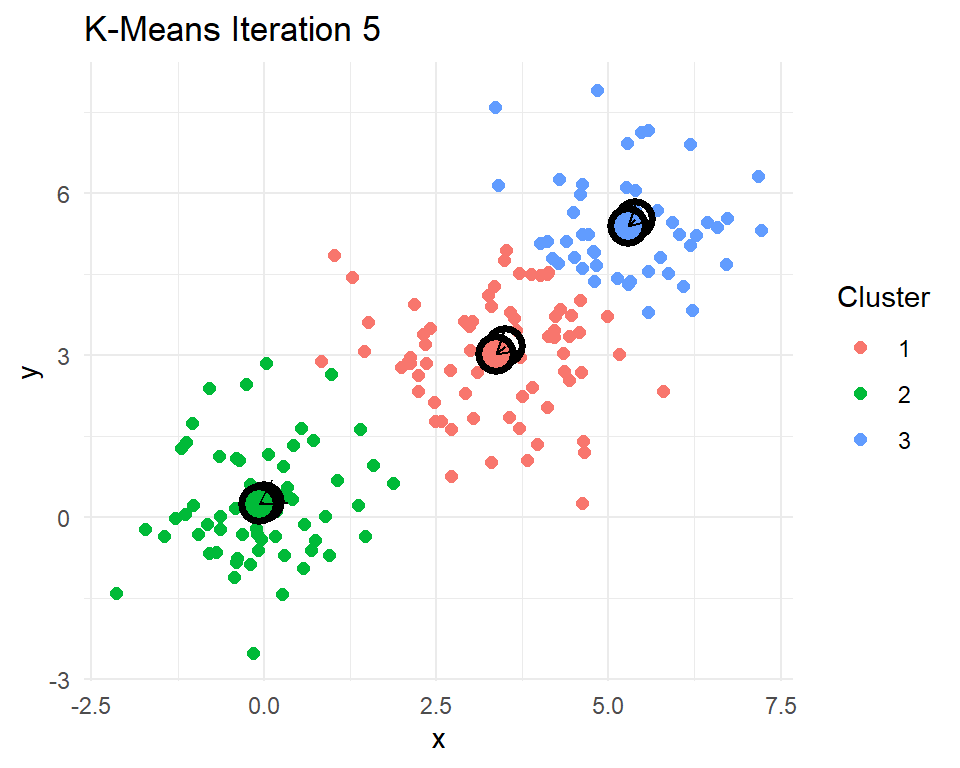

library(kableExtra)
library(dplyr)
library(tidyr)
library(stringr)
library(crayon)
library(text2vec)
library(Matrix)
library(gbm3)
library(uwot)Machine learning with text
1 Introduction
In this section we will use text2vec to explore the language used in a collection of police reports describing officer-involved shootings (OIS). These reports contain unstructured narrative text. Our goal is to transform that text into a format we can analyze using tools from natural language processing (NLP). We will walk through a typical text analysis process: tokenizing the reports, building a vocabulary, constructing a document-term matrix, and applying TF-IDF to highlight the most distinctive terms. Along the way, we will also examine co-occurrence patterns.
To start, we are going to need a couple of R packages to facilitate our work. text2vec will do most of the work converting the documents into a form of data that we can analyze.
As for the source of our documents, the Philadelphia Police Department posts reports on each officer-involved shooting. I have pulled the data off their website and packaged it into an .RData file. Loading it will create the data frame ois. Details on how to pull the data off of the PPD website are part of my R4crim collection of scripts.
load("data/PPD OIS.RData")
ois <- ois |>
mutate(fatal = grepl("1 Killed|^Killed$", subInjury) |> as.numeric())
ois |> select(-text) |> head() id location
1 24-37 3450 Vista Street, Philadelphia, PA
2 24-36 3250 A Street, Philadelphia, PA
3 24-35 5450 Chancellor Street, Philadelphia, PA
4 24-32 2950 E. Street, Philadelphia, PA
5 24-31 3350 Willits Road, Philadelphia, PA
6 24-30 6150 Lebanon Avenue, Philadelphia, PA
url subInjury date lon
1 https://www.phillypolice.com/ois/24-37/ N/A 2024-12-10 -75.03885
2 https://www.phillypolice.com/ois/24-36/ N/A 2024-11-12 -75.12714
3 https://www.phillypolice.com/ois/24-35/ Killed 2024-11-10 -75.23050
4 https://www.phillypolice.com/ois/24-32/ N/A 2024-10-11 -75.12024
5 https://www.phillypolice.com/ois/24-31/ Killed 2024-10-03 -75.00908
6 https://www.phillypolice.com/ois/ps24-30/ N/A 2024-10-02 -75.24450
lat addrmatch score
1 40.04022 3450 Vista St, Philadelphia, Pennsylvania, 19136 100
2 39.99956 3250 A St, Philadelphia, Pennsylvania, 19134 100
3 39.95692 5450 Chancellor St, Philadelphia, Pennsylvania, 19139 100
4 39.99345 2950 E St, Philadelphia, Pennsylvania, 19134 100
5 40.05383 3350 Willits Rd, Philadelphia, Pennsylvania, 19136 100
6 39.98175 6150 Lebanon Ave, Philadelphia, Pennsylvania, 19151 100
addrtype fatal
1 StreetAddress 0
2 StreetAddress 0
3 StreetAddress 1
4 StreetAddress 0
5 StreetAddress 1
6 PointAddress 0The data include an incident ID, the date of the shooting, the address and coordinates where the shooting occurred, and a URL to the incident report. There is also a column called text containing the full text of the officer-involved shooting report. Some can be long, but here’s one that hits close to home as an example.
ois |> filter(id=="16-30") |> select(text) |> unlist() |> cat()
Narrative from OIS Report 16-30
PS#16-30 9/16/16 On Friday, September 16, 2016, at approximately 11:18 P.M., a uniformed sergeant in a marked police vehicle was seated in her parked vehicle in the 5100 block of Sansom Street, when a male approached and without warning, began to discharge a firearm, striking the sergeant, as she remained seated in her vehicle. The offender then began walking east on Sansom Street, stopping at a lounge/bar in the 5100 block of Sansom Street, where he discharged his firearm into the lounge/bar, striking a female employee and a male security guard. The offender continued walking east on Sansom Street to the 4900 block, where he discharged his firearm into an occupied parked vehicle, striking one female and one male occupant. Responding uniformed officers, in marked police vehicles, along with an officer from the University of Pennsylvania police force, located the offender in an alleyway in the rear of the 4800 blocks of Sansom and Walnut Streets. While in the 4800 block of Sansom Street the offender discharged his firearm, striking the University of Pennsylvania Officer as well as a marked police vehicle. Four Officers (one of whom was the University of Pennsylvania Officer) discharged their firearms, striking the offender. The offender fell to the ground and dropped his firearm. Fire Rescue responded and pronounced the offender deceased. The offender’s firearm, a 9MM, semi-automatic pistol, with an obliterated serial number, loaded with 14 live rounds, was recovered at the scene. There were three empty magazines from the offender’s firearm recovered throughout the scene. The sergeant, the University of Pennsylvania Officer, along with the four civilians who were all struck by gunfire, were transported to Penn-Presbyterian Hospital for treatment. The female from the parked vehicle was later pronounced deceased at Penn-Presbyterian Hospital. *** Information posted in the original summary reflects a preliminary understanding of what occurred at the time of the incident. This information is posted shortly after the incident and may be updated as the investigation leads to new information. The DA’s Office is provided all the information from the PPD’s investigation prior to their charging decision.
With this set of 133 reports, we will use a variety of data cleaning methods and machine learning methods to try to make sense of these documents.
2 Turning text into data with text2vec
To transform the text into a form that is better suited for analysis, we need to go through a number of steps. Part of the reason text2vec is popular is that it can handle large collections of documents. To make the tasks computational efficient there are a number of steps to work through in order to get a usable dataset.
We start by create a “tokenizer,” a process that breaks raw text into individual units like words, phrases, or symbols—called (the “tokens”), the basic building blocks for text analysis. The itoken() function in the text2vec package creates an iterator over a collection of text documents, preparing them for efficient text processing. Instead of transforming all text at once, itoken() streams the documents one at a time, making it well-suited for handling large sets of documents. It “tokenizes” each document using =either a built-in default or a custom tokenizer (which we will do) and produces a structure that can be passed on to other functions that will tidy up the collection of tokens and convert them into a dataset. Because it does not store all tokenized text in memory, itoken() enables fast and memory-efficient text analysis workflows.
# Create an iterator over tokens
# tokens does not actually store data
# just an efficient means for looping over documents
tokens <- itoken(ois$text,
progressbar = FALSE,
ids = ois$id)
# this gets the next batch of documents... for me around 14 documents
a <- tokens$nextElem()
a$ids [1] "24-37" "24-36" "24-35" "24-32" "24-31" "24-30" "24-29" "24-28" "24-27"
[10] "24-23" "24-22" "24-21" "24-20" "24-18"a$tokens |> sapply(head) [,1] [,2] [,3] [,4] [,5]
[1,] "3400" "3200" "5400" "29oo" "3300"
[2,] "block" "block" "block" "block" "Willits"
[3,] "of" "of" "of" "of" "Road\nOn"
[4,] "Vista" "A" "Chancellor" "E." "Thursday,"
[5,] "Street\nOn" "Street\nOn" "Street\nOn" "Street\nOn" "October"
[6,] "Tuesday," "Tuesday," "Sunday," "Friday," "3,"
[,6] [,7] [,8] [,9] [,10]
[1,] "6100" "2600" "3900" "2200" "3000"
[2,] "block" "block" "block" "block" "block"
[3,] "of" "of" "of" "of" "of"
[4,] "Lebanon" "Glenwood" "Whittaker" "S." "Ruth"
[5,] "Avenue\nOn" "Avenue\nThe" "Avenue\nThe" "65th" "Street\nThe"
[6,] "Wednesday," "Philadelphia" "Philadelphia" "Street\nThe" "Philadelphia"
[,11] [,12] [,13] [,14]
[1,] "6100" "3500" "2700" "1500"
[2,] "block" "block" "block" "block"
[3,] "of" "of" "of" "of"
[4,] "West" "F" "North" "North"
[5,] "Columbia" "Street\nA" "6th" "57th"
[6,] "Avenue\nA" "Philadelphia" "Street\nA" "Street\nA"You can see that so far itoken() has pulled in 14 documents and chopped them up into individual words. Notice that the collection of words have some undesirable quirks. For example, there are
- numbers that we probably do not really care about
- unimportant words like “of” (known as “stop words”)
- Line feeds
\nin between two words
create_vocabulary() and prune_vocabulary() help us to trim down the words to the ones that we actually care about. create_vocabulary() allows us to provide a list of stop words to remove. stopwords("en") is just such a list. Here are just a few of the 175 English stop words
stopwords::stopwords("en") |> head(20) [1] "i" "me" "my" "myself" "we"
[6] "our" "ours" "ourselves" "you" "your"
[11] "yours" "yourself" "yourselves" "he" "him"
[16] "his" "himself" "she" "her" "hers" There are lists for several other languages as well, Italian, for example.
stopwords::stopwords("it") |> head(20) [1] "ad" "al" "allo" "ai" "agli" "all" "agl" "alla" "alle"
[10] "con" "col" "coi" "da" "dal" "dallo" "dai" "dagli" "dall"
[19] "dagl" "dalla"We can also ask consider pairs of words in addition to single words (ngram=1:2). This allows word phrases like “police officer” and “pit bull” to be considered as words.
prune_vocabulary() trims down words from our vocabulary that are probably not particularly useful
- words that few documents use (too rare)
- words that too many documents use (too common)
We can add in some other filters too, like only using words that are at least three letters and dropping any words that have numbers in them (like 3pm or 9mm).
# reset to beginning
tokens <- itoken(ois$text,
progressbar = FALSE,
ids = ois$id)
# Build vocabulary
# these are the collection of words that I care about
# skip stopwords (the, of, in, ...)
# include two word phrases (2-gram or bigram),
# "police officer", "full uniform", "black male", "drop weapon", "pit bull"
# skip words that only show up in fewer than 10 documents
# skip words that are in the majority of documents (police?, discharged?)
vocab <- tokens |>
create_vocabulary(stopwords = stopwords::stopwords("en"),
ngram = 1:2) |>
prune_vocabulary(term_count_min = 10,
doc_proportion_max = 0.5) |>
filter(nchar(term) >= 3) |>
filter(!grepl("[0-9]", term))
# space_tokenizer(), default, keeps a lot of punctuation
vocabNumber of docs: 133
175 stopwords: i, me, my, myself, we, our ...
ngram_min = 1; ngram_max = 2
Vocabulary:
term term_count doc_count
<char> <int> <int>
1: AM, 10 10
2: Avenue\nOn 10 10
3: District_Police 10 10
4: Hospital, 10 9
5: Penn-Presbyterian 10 8
---
552: firearm 112 63
553: one 116 65
554: posted 120 60
555: vehicle 180 65
556: offender 182 49Let’s make our own tokenizer instead of using the default. As we see, the default (space_tokenizer()) often retains punctuation, symbols, or other strange features that dilute or fragment our vocabulary. Customizing the tokenizer allows us to tailor the cleaning process to the structure and quirks of the officer-involved shooting reports. The function that we will create, oisTokenizer(), is a custom tokenizer designed to clean and standardize the raw text from officer-involved shooting reports before further text analysis. It converts the text to lowercase, removes common punctuation patterns (like those in abbreviations such as “3 p.m.”), strips out unusual or inconsistent symbols (such as smart quotes, parentheses, and hash symbols), and splits the text into individual tokens using whitespace as the delimiter.
After tokenization, it will also apply “stemming”. Stemming is a text preprocessing technique that reduces words to their root or base form by removing common suffixes. For example, “running”, “runner”, and “runs” might all be reduced to “run”, allowing the model to treat these variations as the same underlying concept. The SnowballC package has a handy wordStem() function in it. Let’s test it out on a few words.
c("dog","dogs","office","officer","officers","police","policy","policies") |>
SnowballC::wordStem(language = "en")[1] "dog" "dog" "offic" "offic" "offic" "polic" "polici" "polici"Conveniently, it makes both “dog” and “dogs” simply “dog”. However, note that it also makes “office”, “officer”, and “officers” all simplified to “office”… maybe not ideal. Since our text will have a lot of “officer” and “officers” and probably very few, if any, “office”, we will need to remember that this stemming has reduced our “police officers” to “polic_offic”. You may see terms like “offic_offic” or “offend_offend”. Typically this occurs because officer or offender was the last word in one sentence and the first non-stop word in the next sentence (e.g. “The suspect ran from the officer. The officer said ‘stop!’”).
# our own custom tokenizer
oisTokenizer <- function(text)
{
text |>
tolower() |>
# remove abbreviation punctuation (like 3 p.m.)
gsub("([A-z])[,.]+", "\\1", x=_) |>
# remove some weird symbols
gsub("[“”()#]", "", x=_) |>
# no smart quotes
gsub("’", "'", x=_) |>
# split any words with \n, \t, \r between them
strsplit("\\s+") |>
# stemming
lapply(SnowballC::wordStem, language = "en")
}Now we can rerun our documents through our new tokenizer.
# reset to beginning
# now using our oisTokenizer()
tokens <- itoken(ois$text,
tokenizer = oisTokenizer,
progressbar = TRUE,
ids = ois$id)
vocab <- tokens |>
create_vocabulary(stopwords = stopwords::stopwords("en"),
ngram = 1:2) |>
prune_vocabulary(term_count_min = 10,
doc_proportion_min = 0.05,
doc_proportion_max = 0.5) |>
filter(nchar(term) >=3) |>
filter(!grepl("[0-9]", term)) |>
# Drop some specific terms that are not useful (e.g. philadelphia)
filter(!term %in% c("philadelphia_polic","philadelphia",
"inform_da","da_offic","incid_inform","inform_ppd",
"inform_post","post","officer-involv",
"officer-involv_shoot"))
vocabNumber of docs: 133
175 stopwords: i, me, my, myself, we, our ...
ngram_min = 1; ngram_max = 2
Vocabulary:
term term_count doc_count
<char> <int> <int>
1: advanc_toward 10 7
2: announc 10 8
3: approach_driver 10 9
4: cartridg 10 9
5: district_place 10 10
---
514: shoot 102 62
515: door 103 51
516: point 105 54
517: suspect 110 21
518: offend 308 56Now we have a collection of words and word phrases gathered from our documents. Note that it includes so two word phrases (bigrams) with the two stemmed words combined with an underscore between them.
2.1 Creating a document-term matrix (DTM)
Our next destination is to create a “document-term matrix” (DTM). A DTM is a matrix representation of a collection of text documents, where each row corresponds to a document and each column corresponds to a unique term (a word or phrase) from the collection of documents. The values in the matrix typically reflect the number of times each term appears in each document. A DTM transforms the unstructured text into a format that machine learning models can work with.
The first step to getting to a DTM with text2vec is to create a “vectorizer”. A vectorizer translates tokenized text into a numeric matrix format, such as a DTM. vocab_vectorizer() creates a function that will take batches of documents, compare them to the vocabulary we built, and produce the associated components of the DTM.
# Create a vectorizer
# helper function to convert streams of text into DTM
vectorizer <- vocab_vectorizer(vocab)
# Let's see what this function looks like!
vectorizerfunction (iterator, grow_dtm, skip_grams_window_context, window_size,
weights, binary_cooccurence = FALSE)
{
vocab_corpus_ptr = cpp_vocabulary_corpus_create(vocabulary$term,
attr(vocabulary, "ngram")[[1]], attr(vocabulary, "ngram")[[2]],
attr(vocabulary, "stopwords"), attr(vocabulary, "sep_ngram"))
setattr(vocab_corpus_ptr, "ids", character(0))
setattr(vocab_corpus_ptr, "class", "VocabCorpus")
corpus_insert(vocab_corpus_ptr, iterator, grow_dtm, skip_grams_window_context,
window_size, weights, binary_cooccurence)
}
<bytecode: 0x000001c7958ba5b8>
<environment: 0x000001c7958af118>It is a little difficult to interpret, but we can see that it is going to take in a iterator over our tokenized documents and produce something that will (hopefully!) be useful. Let’s give it a try.
# Create the document-term matrix (DTM)
# row represents a document
# column represents a unique term (word or phrase)
# cell contains the count (or weight) of that term in the document
oisDTM <- create_dtm(tokens, vectorizer)
oisDTM[65:74, 415:424] |> as.matrix() |> t() 20-34 20-33 20-32 20-31 20-30 20-29 20-26 20-24 20-23 20-20
affair 0 0 0 0 0 0 0 0 0 0
intern 0 0 0 0 0 0 0 0 0 0
intern_affair 0 0 0 0 0 0 0 0 0 0
offic_offic 0 3 0 0 0 0 0 0 0 1
sever 0 1 0 0 0 0 3 1 0 5
wound 0 0 1 1 0 1 2 0 0 0
complain 0 0 4 0 0 0 23 0 0 0
dure 0 0 1 0 0 1 0 0 0 0
duti 0 0 0 0 0 0 0 0 0 0
park 0 0 0 1 1 2 3 0 0 0We have a DTM! I have picked a few interesting rows and columns. I also transposed the DTM so it is more readable, but typically the rows are documents and columns are terms. You can see a few non-zero counts in this matrix. These indicate which documents include these terms and how many times that term appears in the document.
Let’s explore further.
# number of documents and words
dim(oisDTM)[1] 133 518# rows represent individual OIS shooting reports
rownames(oisDTM)[1:5][1] "24-37" "24-36" "24-35" "24-32" "24-31"# columns are the words/phrases
colnames(oisDTM)[1:10] # feature names [1] "advanc_toward" "announc" "approach_driver" "cartridg"
[5] "district_place" "district_polic" "drop_gun" "due"
[9] "fled_scene" "gave" # how many vocab words in document?
rowSums(oisDTM)24-37 24-36 24-35 24-32 24-31 24-30 24-29 24-28 24-27 24-23 24-22 24-21 24-20
56 71 118 56 63 63 62 59 43 84 83 84 96
24-18 24-17 24-15 24-14 24-13 24-12 24-10 24-09 24-08 24-07 24-06 24-05 24-04
110 78 101 81 98 150 95 141 116 96 98 184 242
24-03 24-02 24-01 23-33 23-31 23-29 23-27 23-26 23-25 23-24 23-23 23-21 23-14
101 93 105 74 138 79 142 112 97 92 108 108 101
23-13 23-10 23-04 22-27 22-26 22-24 22-22 22-15 22-14 22-10 22-09 22-08 22-07
77 99 159 116 165 114 94 169 130 251 100 105 113
22-06 22-05 22-04 22-03 22-01 21-15 21-14 21-12 21-10 21-09 21-06 21-04 20-34
179 140 89 98 94 93 92 165 163 70 109 174 65
20-33 20-32 20-31 20-30 20-29 20-26 20-24 20-23 20-20 20-15 20-12 20-08 20-07
159 143 105 124 115 292 135 104 204 116 126 139 103
19-23 19-21 19-20 19-14 19-13 19-11 19-09 19-06 19-04 18-28 18-27 18-26 18-25
133 106 166 92 152 118 166 140 131 137 136 136 120
18-22 18-19 18-17 18-16 18-12 18-08 18-02 18-01 17-37 17-36 17-30 17-28 17-25
96 110 133 134 87 92 102 147 145 101 78 78 104
17-23 17-22 17-20 17-19 17-17 17-13 17-03 16-43 16-40 16-38 16-37 16-35 16-34
135 104 93 106 121 114 135 140 150 111 161 137 87
16-33 16-32 16-30 16-29 16-28 16-19 16-18 16-16 16-13 16-12 16-11 16-10 16-07
174 141 143 127 98 92 114 105 109 130 135 129 119
16-03 16-02 16-01
173 131 113 # how many documents have these words?
colSums(oisDTM)[1:20] advanc_toward announc approach_driver cartridg district_place
10 10 10 10 10
district_polic drop_gun due fled_scene gave
10 10 10 10 10
ground_drop hand_offic hospit_critic hospit_polic june
10 10 10 10 10
knock lost notifi offic_drew offic_oper
10 10 10 10 10 # Most common words?
colSums(oisDTM) |>
sort(decreasing = TRUE) |>
head(10) offend suspect point door shoot two avenu dog toward patrol
308 110 105 103 102 101 99 93 93 90 2.2 Term Frequency–Inverse Document Frequency
While raw term counts in a document-term matrix tell us how often each word appears, they do not account for how informative or distinctive those words are across the entire collection of documents. Common words like “officer” or “incident” may appear frequently in every report, but they are not useful for distinguishing one document from another. Term frequency-inverse document frequency (TF-IDF) improves on this by weighting terms based on how frequently they appear in a specific document and how rare they are across all documents. This highlights terms that are both common within a document and uncommon elsewhere, making them more meaningful for identifying the unique content of each report.
Term Frequency-Inverse Document Frequency (TF-IDF) gives weights to words in a document in a way that balances:
- Term Frequency (TF): This word must be important in this document
- The more a word appears in a document, the more likely it is to be relevant to the document’s content
- If the word “shooting” appears 12 times in a police report, it is probably central to that document
- Inverse Document Frequency (IDF): But if it appears in every document, it is not very informative
- Common words like “officer”, “incident”, or “said” might appear everywhere
- IDF downweights those high-frequency but low-discrimination terms
- It prefers terms that help distinguish one document from others
The formula for TF-IDF for document \(i\) and term \(j\):
\[ \mathrm{tfidf}_{ij} = \mathrm{TF}_{ij}\log\frac{N}{\mathrm{DF}_j} \] where
- \(\mathrm{TF}\) is the number of times term \(j\) appears in document \(i\). It measures the importance of the term within a document
- \(N\) = total number of documents
- \(\mathrm{DF}_j\) = number of documents containing term \(j\)
\(\mathrm{IDF}_{ij}=\log\frac{N}{\mathrm{DF}_j}\) captures the rarity across documents. Note that if a word appears in all documents then \(\mathrm{tfidf}_{ij} = 0\). The combination of \(\mathrm{TF}\) and \(\mathrm{IDF}\) gives a measure of relevance and distinctiveness. A high \(\mathrm{tfidf}_{ij}\) means a term appears often in document \(i\), but rarely in other documents. It gives you terms that define a document. These are the terms that are useful for classification, clustering, or topic modeling.
2.2.1 Example
Assume there are \(N=100\) documents.
| Term | TF in Doc A | DF across corpus | IDF | TF-IDF |
|---|---|---|---|---|
| “weapon” | 5 | 10 | 2.3 | 11.5 |
| “officer” | 6 | 95 | 0.1 | 0.3 |
| “said” | 20 | 100 | 0 | 0 |
- “weapon” gets a high score, specific and relevant
- “officer” is common, downweighted
- “said” is everywhere, zeroed out
# TF-IDF: term frequency–inverse document frequency weights
# downweights common words that appear in many documents
# upweights rare words that are more informative or distinctive
# TF: How often a word appears in a document
# IDF: How rare that word is across all documents
# TF-IDF = TF × log(N / DF)
# N = total number of documents
# DF = number of documents containing the term
tfidf_transformer <- TfIdf$new()
oisTFIDF <- tfidf_transformer$fit_transform(oisDTM)Let’s take a look at those same rows and columns that we did before for the DTM. The matrix looks largely the same, just everything scaled down.
oisTFIDF[65:74, 415:424] |> as.matrix() |> round(2) |> t() 20-34 20-33 20-32 20-31 20-30 20-29 20-26 20-24 20-23 20-20
affair 0 0.00 0.00 0.00 0.00 0.00 0.00 0.00 0 0.00
intern 0 0.00 0.00 0.00 0.00 0.00 0.00 0.00 0 0.00
intern_affair 0 0.00 0.00 0.00 0.00 0.00 0.00 0.00 0 0.00
offic_offic 0 0.03 0.00 0.00 0.00 0.00 0.00 0.00 0 0.01
sever 0 0.01 0.00 0.00 0.00 0.00 0.02 0.01 0 0.04
wound 0 0.00 0.01 0.01 0.00 0.01 0.01 0.00 0 0.00
complain 0 0.00 0.07 0.00 0.00 0.00 0.20 0.00 0 0.00
dure 0 0.00 0.01 0.00 0.00 0.01 0.00 0.00 0 0.00
duti 0 0.00 0.00 0.00 0.00 0.00 0.00 0.00 0 0.00
park 0 0.00 0.00 0.02 0.01 0.03 0.02 0.00 0 0.00Let’s compare the top features.
# View top features by TF
colSums(oisDTM) %>%
sort(decreasing = TRUE) %>%
head(10) offend suspect point door shoot two avenu dog toward patrol
308 110 105 103 102 101 99 93 93 90 # View top features by TF-IDF
colSums(oisTFIDF) %>%
sort(decreasing = TRUE) %>%
head(10) offend dog suspect shoot knife avenu
3.124350 2.212498 1.819930 1.134967 1.098324 1.087595
driver victim resid polic_vehicl
1.000676 1.000078 0.993729 0.993306 The TF-IDF does change which terms make the top-10 list. We see “knife” and “driver” show up and “door” and “point” drop off.
3 Term co-occurrence matrix (TCM)
There may be some concepts that are not limited to a single word or a few adjacent words. Term co-occurrence looks for words that tend to appear close to each other in text to possibly help you expand the vocabulary to additional phrases. A term co-occurrence matrix (TCM) captures how often pairs of words appear near each other within a given window of text, such as a sentence or a few neighboring words. Unlike a document-term matrix, which represents the relationship between documents and individual terms, a TCM focuses on the relationships between terms themselves. This is useful for uncovering word associations and identifying common phrases. In our case, we will use the TCM to explore how certain words, such as “officer,” “suspect,” or “weapon,” tend to co-occur across police shooting reports, revealing patterns that might not be visible from frequency counts alone.
When scanning through each document, setting skip_grams_window = 5 will treat any two terms that appear within a window of 5 tokens as co-occurring. For example, if the document has the phrase “the officer shot the suspect with a weapon” and we set skip_grams_window = 5, then for the word “shot” it will consider “the”, “officer”, “the”, “suspect”, “with” as co-occurring terms.
We will use create_tcm() to create a TCM. The \((i,j)\) element of the TCM will be the number of times term \(i\) occurs within 5 terms of term \(j\).
# Create a co-occurrence matrix (Feature Co-occurrence Matrix)
oisTCM <- itoken(ois$text,
tokenizer = oisTokenizer,
progressbar = FALSE,
ids = ois$id) |>
create_tcm(vocab_vectorizer(vocab),
skip_grams_window = 5)This will be a little easier to visualize if we convert to a long (rather than wide) format.
# Convert to triplet format and extract top co-occurring pairs
oisPairs <- Matrix::summary(oisTCM) |>
filter(i != j) |>
rename(feature1 = i, feature2 = j, weight = x) |>
left_join(data.frame(feature1 = 1:nrow(oisTCM),
term1 = colnames(oisTCM)),
by = join_by(feature1)) |>
left_join(data.frame(feature2 = 1:nrow(oisTCM),
term2 = colnames(oisTCM)),
by = join_by(feature2)) |>
select(-feature1, -feature2) |>
filter(term1 != term2) |>
filter(!str_detect(term1, fixed(term2)) &
!str_detect(term2, fixed(term1)))
oisPairs |>
arrange(desc(weight)) |>
slice_head(n = 50)
weight term1 term2
1 30.00000 offic_provid provid_inform
2 30.00000 lead_new new_inform
3 30.00000 investig_lead lead_new
4 30.00000 may_updat updat_investig
5 30.00000 incid_may may_updat
6 30.00000 incid_may short_incid
7 30.00000 occur_time time_incid
8 30.00000 occur_time understand_occur
9 30.00000 preliminari_understand understand_occur
10 30.00000 preliminari_understand reflect_preliminari
11 30.00000 reflect preliminari
12 30.00000 reflect_preliminari summari_reflect
13 30.00000 reflect summari
14 30.00000 origin_summari summari_reflect
15 30.00000 summari origin
16 30.00000 origin_summari post_origin
17 30.00000 understand preliminari
18 30.00000 investig_lead updat_investig
19 30.00000 lead new
20 30.00000 post_short short_incid
21 30.00000 investig_prior ppd_investig
22 29.50000 prior_charg charg_decis
23 29.50000 prior_charg investig_prior
24 25.00000 affair intern
25 24.00000 administr duti
26 24.00000 outcom pend
27 24.00000 administr place
28 23.50000 duti_pend administr_duti
29 23.50000 duti pend
30 23.00000 administr_duti place_administr
31 23.00000 duti_pend pend_outcom
32 20.00000 ppd_investig prior
33 20.00000 lead new_inform
34 20.00000 investig_lead new
35 20.00000 investig_lead updat
36 20.00000 incid_may updat
37 20.00000 occur_time understand
38 20.00000 reflect_preliminari understand
39 20.00000 preliminari_understand reflect
40 20.00000 summari_reflect preliminari
41 20.00000 reflect_preliminari summari
42 20.00000 summari_reflect origin
43 20.00000 post_origin summari
44 20.00000 origin_summari reflect
45 20.00000 lead updat_investig
46 20.00000 understand_occur preliminari
47 19.86667 charg_decis prior
48 19.66667 prior_charg decis
49 19.25000 mark patrol
50 18.50000 stabl conditMuch of this co-occurrence is due to the template language describing where the department is in the investigation, referrals to the district attorney, and the report offers preliminary summary.
Template language on the report
*** Information posted in the original summary reflects a preliminary understanding of what occurred at the time of the incident. This information is posted shortly after the incident and may be updated as the investigation leads to new information. The District Attorney’s Office is provided all the information from the PPD’s investigation prior to their charging decision.
Further on down the list some term pairs a more interesting.
oisPairs |>
filter(weight >= 8 & weight <=9) |>
arrange(desc(weight))
weight term1 term2
1 9.000000 firearm_strike discharg_firearm
2 9.000000 univers_hospit templ
3 9.000000 driver door
4 9.000000 open door
5 8.999996 duti_pend place
6 8.750000 attack dog
7 8.666667 respond_radio call
8 8.666667 affair_officer-involv shoot
9 8.666667 affair_officer-involv intern
10 8.500000 inform_district new_inform
11 8.500000 intern pend
12 8.500000 attorney_offic offic_provid
13 8.500000 inform_district district_attorney
14 8.500000 offic_mark mark_polic
15 8.500000 return fire
16 8.500000 semi-automat pistol
17 8.500000 drop offend
18 8.250000 pend_outcom intern_affair
19 8.250000 outcom_intern duti_pend
20 8.250000 outcom affair
21 8.250000 miss offend
22 8.250000 knife drop
23 8.000001 unmark polic_vehicl
24 8.000000 arriv locat4 Singular value decomposition for text
We already explored how SVD can be used to compress images and classify emojis. Now we will explore what SVD does for text.
Since TFIDF matrices can get large, we will use the SVD implementation in the IRLBA package (Implicitly Restarted Lanczos Bidiagonalization Algorithm). The IRLBA implementation of SVD allows you to limit the number of singular vectors to compute, ignoring and never computing the rest.
library(irlba)
oisSVD <- irlba(t(oisTFIDF), nv = 50)
# each run of SVD can switch the signs on U and V
# this forces sign(v[1,]) = +1, so SVD is unique
oisSVD$u <- sweep(oisSVD$u, 2, sign(oisSVD$v[1,]), `*`)
oisSVD$v <- sweep(oisSVD$v, 2, sign(oisSVD$v[1,]), `*`)Let’s see how many singular vectors seem important. In Figure 1 we see the first two or three singular values seem large, but then they decrease quite slowly from there.
plot(oisSVD$d,
xlab="Index of the singular value",
ylab="Singular value",
ylim=c(0, max(oisSVD$d)),
pch=16)
oisTFIDF
The columns of \(\mathbf{U}\) are our “eigendocuments,” the fundamental building blocks that the actual documents blend to form their word collections. We will take a look at the first five eigendocuments, highlighting the 10 terms with the highest weight in the left singular vectors. Note that both large positive and large negative values are important to interpret. I have added headings to each left singular vector summarizing what kinds of incidents might heavily weight this column of \(\mathbf{U}\).
# Stack the top 10 terms from each component into one long table
a <- data.frame(term=colnames(oisTFIDF),
u1=oisSVD$u[,1],
u2=oisSVD$u[,2],
u3=oisSVD$u[,3],
u4=oisSVD$u[,4],
u5=oisSVD$u[,5])
bind_rows(a |>
select(term, u1) |>
arrange(desc(abs(u1))) |>
slice_head(n = 10) |>
mutate(component = "u1", u = u1),
a |>
select(term, u2) |>
arrange(desc(abs(u2))) |>
slice_head(n = 10) |>
mutate(component = "u2", u = u2),
a |>
select(term, u3) |>
arrange(desc(abs(u3))) |>
slice_head(n = 10) |>
mutate(component = "u3", u = u3),
a |>
select(term, u4) |>
arrange(desc(abs(u4))) |>
slice_head(n = 10) |>
mutate(component = "u4", u = u4),
a |>
select(term, u5) |>
arrange(desc(abs(u5))) |>
slice_head(n = 10) |>
mutate(component = "u5", u = u5)) |>
select(component, term, u) |>
group_by(component) |>
mutate(rank = row_number()) |>
ungroup() |>
pivot_wider(names_from = component,
values_from = c(term, u),
names_sep = "_") |>
select(term_u1, u_u1, term_u2, u_u2, term_u3, u_u3,
term_u4, u_u4, term_u5, u_u5) |>
kable(align = "rrrrrrrrrr",
col.names = c("Term","\\(u_1\\)","Term","\\(u_2\\)",
"Term","\\(u_3\\)","Term","\\(u_4\\)",
"Term","\\(u_5\\)"),
digits = 2,
escape = FALSE,
booktabs = TRUE) |>
add_header_above(c("Offender and dog" = 2,
"Dog attack, no offender" = 2,
"Suspect/SWAT" = 2,
"Knife attacks" = 2,
"?" = 2),
escape = FALSE) |>
kable_styling(full_width = FALSE)| Term | (u_1) | Term | (u_2) | Term | (u_3) | Term | (u_4) | Term | (u_5) |
|---|---|---|---|---|---|---|---|---|---|
| dog | 0.26 | dog | 0.50 | suspect | -0.61 | knife | 0.44 | knife | -0.53 |
| offend | 0.25 | offend | -0.31 | dog | 0.33 | offic_number | -0.32 | suspect | -0.31 |
| suspect | 0.17 | attack | 0.21 | offend | 0.20 | number | -0.30 | offic_number | -0.24 |
| shoot | 0.11 | bull | 0.16 | swat | -0.18 | suspect | -0.28 | number | -0.20 |
| attack | 0.10 | pit_bull | 0.16 | offic_number | 0.16 | number_one | -0.26 | drop_knife | -0.19 |
| resid | 0.10 | pit | 0.15 | attack | 0.16 | drop_knife | 0.19 | number_one | -0.19 |
| victim | 0.09 | offic_number | -0.12 | number | 0.14 | victim | 0.15 | offend | 0.14 |
| avenu | 0.09 | number | -0.11 | swat_offic | -0.14 | drop | 0.12 | rear | 0.13 |
| knife | 0.09 | number_one | -0.10 | number_one | 0.13 | bedroom | 0.11 | unmark | 0.12 |
| depart | 0.09 | veteran | 0.09 | male_suspect | -0.13 | offend | 0.10 | area | 0.11 |
Top 10 Terms for First 5 SVD Components
Note that “dog” shows up with a large absolute value in the first three left singular vectors. Even if there is a large negative value, that still means the term is important. A report of shooting a pit bull will have a large negative value for its \(v_2\), signalling a heavy presence of dog, pit bull, and attack terms, but the absence of the “offender” term. The first left singular vector measure the combined presence of “dog,” “offender,” and “suspect” (or the absence of all three if a document’s value of \(v_1\) is large and negative.
Remember that the columns of \(\mathbf{V}\) tell us how a particular report mixes together the eigendocuments (columns of \(\mathbf{U}\)) to form their TFIDF weighted terms. I am curious to explore documents involving dog attacks (\(\mathbf{u}_2\)) and documents with knife attacks (\(\mathbf{u}_4\)). The code below creates an interactive 2D map of documents on their values of \(v_2\) and \(v_4\). For each document, the code extracts the 10 most heavily weighted TF-IDF terms to use as hover text, giving a quick sense of the content. It also assigns each document to a category, “Likely dog attack,” “Likely knife attack,” or “Other,” based on thresholds of \(v_2\) and \(v_4\). plotly() produces an interactive scatterplot where each point is a document, colored by category and annotated with its key terms. This visualization allows us to explore thematic variation in the reports and visually distinguish different types of incidents based on the language used.
library(plotly)
# collect the 10 terms with the highest weight in each document
i <- apply(oisTFIDF, 1, order, decreasing=TRUE)
hovertext <- apply(i, 2,
function(j)
{
colnames(oisTFIDF)[j[1:10]] |>
paste(collapse = "\n")
})
# label some document types
group <- case_when(oisSVD$v[,2] > 0.1 ~ "Likely dog attack",
oisSVD$v[,4] > 0.1 ~ "Likely knife attack",
TRUE ~ "Other")
groupCols <- c("Likely dog attack" = "red",
"Likely knife attack" = "orange",
"Other" = "steelblue")
# make a plot with hovertext
plot_ly(x = oisSVD$v[,2],
y = oisSVD$v[,4],
type = "scatter",
mode = "markers",
text = hovertext,
hoverinfo = "text",
color = group,
colors = groupCols,
marker = list(size = 6)) |>
layout(xaxis = list(title = "V2 - Dog attack measure"),
yaxis = list(title = "V4 - Knife attack measure"))5 Clustering documents with Hartigan’s k-means clustering algorithm
Hartigan’s k-means algorithm is an iterative method for partitioning data into \(k\) clusters by minimizing the total within-cluster sum of squares. It begins with randomly chosen cluster centers (centroids) and alternates between two steps:
- assigning each data point to the nearest centroid based on Euclidean distance
- updating each centroid to be the mean of the points currently assigned to it
These steps repeat until the assignments no longer change significantly, indicating convergence. The algorithm is greedy and locally optimal. That is, it always reduces the the within cluster sum of squares at each iteration, but it can converge to different solutions depending on the initial centroids. Multiple runs with different random starts are often used to find a better overall solution.
Let’s look at a little 2D demonstration before we run this on documents, which can be a little abstract. I have created three clusters with centers at (0,0), (3,3), and (5,5). Then I have R code that reassigns points to their nearest centroids, recomputes the cluster centroids, plots the points colored by their cluster assignment, checks for convergence, and repeats if needed.
set.seed(20250325)
library(ggplot2)
# Simulate data from 3 clusters
df <- data.frame(x=rnorm(180, mean=c(0,3,5)),
y=rnorm(180, mean=c(0,3,5)))
# find three clusters
k <- 3
# pick three random points to start
old_centroid <- df |>
slice_sample(n=k) |>
select(x,y)
# Function to assign points to nearest center
# compare each point to each of the three centers
# assign the point to its closest center
assign_clusters <- function(df, centers)
{
apply(df, 1, function(point)
{
which.min(colSums((t(centers) - point)^2))
})
}
iter <- 1
repeat
{
# Assign points to nearest cluster
df$cluster <- assign_clusters(df[,c("x","y")],
old_centroid)
# get centroids of newly assigned clusters
new_centroid <- df |>
group_by(cluster) |>
summarize(x=mean(x), y=mean(y))
# plot showing old and new centroids
plotKmeans <- ggplot(df, aes(x = x, y = y, color = factor(cluster))) +
geom_point(size = 2) +
geom_point(data = old_centroid, aes(x = x, y = y),
shape = 21, size = 5, stroke = 2, color = "black") +
geom_point(data = new_centroid, aes(x = x, y = y, fill=factor(cluster)),
shape = 21, size = 5, stroke = 2, color = "black") +
geom_segment(
data = bind_cols(old_centroid, new_centroid),
aes(x = x...1, y = y...2, xend = x...4, yend = y...5),
arrow = arrow(length = unit(0.15, "inches")),
color = "black"
) +
ggtitle(paste("K-Means Iteration", iter)) +
labs(color="Cluster") +
guides(fill = "none") +
theme_minimal()
print(plotKmeans)
new_centroid <- new_centroid |> select(-cluster)
# check if converged
if(all(abs(new_centroid - old_centroid) < 0.001))
{
break
}
old_centroid <- new_centroid
iter <- iter + 1
}





After 8 iterations, the centroids of the clusters do not change. That means the cluster assignments for each point will no longer changed. The k-means algorithm has converged after 8 iterations. Indeed k-means seems to have figured out the three clusters that I simulated. In practice we never really know how many real clusters there are. We need to come up with some measures that help us decide whether the number of clusters and their centroids adequately capture the data points.
The plot in Figure 11 illustrates the total sum of squares (TSS), which measures the overall variability in the dataset. It shows each data point connected to the grand centroid, the average of all points in the data. The total sum of squares is calculated by summing the squared distances from each point to this overall centroid. This serves as a baseline measure of dispersion before we run our clustering algorithm.
tot_centroid <- df |>
select(x, y) |>
colMeans() |>
t() |>
data.frame()
plotTotCentroid <- ggplot(df, aes(x = x, y = y,
color = factor(cluster))) +
geom_point(size = 2) +
geom_segment(
data = bind_cols(tot_centroid |>
slice(rep(1,180)),
df |>
select(x,y)),
aes(x = x...1, y = y...2, xend = x...3, yend = y...4),
color = "black"
) +
labs(color="Cluster") +
theme_minimal()
print(plotTotCentroid)In contrast, Figure 12 depicts the within-cluster sum of squares (WCSS). Each point is now connected to its respective cluster centroid, rather than the overall centroid. The sum of squared distances from each point to its assigned cluster center quantifies how compact each cluster is.
new_centroid$cluster <- 1:3
plotWithinCentroid <- ggplot(df, aes(x = x, y = y,
color = factor(cluster))) +
geom_point(size = 2) +
geom_segment(
data = df |>
left_join(new_centroid, by=join_by(cluster)),
aes(x = x.x, y = y.x, xend = x.y, yend = y.y),
color = "black"
) +
labs(color="Cluster") +
theme_minimal()
print(plotWithinCentroid)A useful measure of clustering quality is the proportion of variance explained by the clustering, computed as \(R^2 = 1-\frac{WCSS}{TSS}\). This tells us how much of the total variability has been accounted for by the clustering structure. A higher value indicates better clustering. If this proportion is low, it may suggest that the three clusters is insufficient to capture the underlying structure of the data.
Let’s put all this to work on our officer-involved shooting reports. We will define documents by their first 7 right singular vectors (columns of \(\mathbf{V}\)). We will actually cluster on \(\mathbf{V}\boldsymbol\Sigma\). Remember that SVD normalizes all the columns in \(\mathbf{V}\) (and those in \(\mathbf{U}\) as well) to have length 1. That has the effect of making differences between documents basedon their values of \(v_{30}\) just as large as differences on \(v_1\). The singular values in \(\boldsymbol\Sigma\) tell us how to weight each column based how much variance it captures in the original TF-IDF matrix. Without this weighting, each dimension would contribute equally to distance calculations during clustering, even though some components may be far more informative than others. By using \(\mathbf{V}\boldsymbol\Sigma\), our clustering algorithm will more accurately group documents based on their underlying thematic content.
R has a built-in kmeans() function in the default stats package that will do all the work for us. First, we need to decide on how many clusters we should use. The code below explores the relationship between the number of clusters, \(k\), and \(R^2\). This is a key part of the “elbow method,” a common strategy for selecting an appropriate number of clusters. By running k-means repeatedly with increasing values of \(k\) (from 1 to 40 in this case), and recording the corresponding \(R^2\), we can visualize how much the clustering improves as \(k\) increases. A plot of \(R^2\) versus \(k\) typically shows a steep increase initially and then levels off. The “elbow” point, where the rate of improvement sharply slows, is often a good choice for the number of clusters. It represents a balance between underfitting and overfitting the structure in the data. Another common method is to consider more and more clusters until \(R^2\) reaches 0.80 (or 0.90).
design <- data.frame(k=1:40, R2=NA)
for(i in 2:nrow(design))
{
# multiply by the singular values to incorporate the importance of each
km <- kmeans(oisSVD$v[,1:7] %*% diag(oisSVD$d[1:7]),
centers = design$k[i],
nstart = 5)
design$R2[i] <- ifelse(i==1, 1,
1 - km$tot.withinss/km$totss)
}
plot(R2~k, data=design, pch=16,
xlab=expression(k),
ylab=expression(R^2),
ylim=0:1)
abline(h=0.8, col="red")
kSelect <- design |>
filter(R2 > 0.8) |>
slice_min(R2) |>
pull(k)
In Figure 13 I have marked where the \(R^2\) reaches 80%. That happens when we set \(k\) to 10. With \(k\) set to 10, the clustering captures 80% of the variation in the first seven right singular vectors.
# run kmeans on first 10 right singular vectors (scaled by Sigma)
# clusters similar documents
set.seed(20250325)
oisKmeans <- kmeans(oisSVD$v[,1:10] %*% diag(oisSVD$d[1:10]),
centers = kSelect,
nstart = 5) # try 5 random starting pointsLet’s add the cluster label to our original OIS data frame so we can see if themes are identifiable from their incident descriptions.
# add the cluster labels to the dataset
ois$cluster <- oisKmeans$cluster
ois |>
select(id,location,date,cluster) |>
head() id location date cluster
1 24-37 3450 Vista Street, Philadelphia, PA 2024-12-10 9
2 24-36 3250 A Street, Philadelphia, PA 2024-11-12 2
3 24-35 5450 Chancellor Street, Philadelphia, PA 2024-11-10 10
4 24-32 2950 E. Street, Philadelphia, PA 2024-10-11 9
5 24-31 3350 Willits Road, Philadelphia, PA 2024-10-03 6
6 24-30 6150 Lebanon Avenue, Philadelphia, PA 2024-10-02 9We need to craft some labels or definitions for these clusters. For each cluster I will compute the average of their TFIDF weights for each term in the vocabulary. I will paste together the top ten terms as cluster labels.
hovertext <- as.matrix(oisTFIDF) |>
as.data.frame() |>
mutate(cluster = ois$cluster) |>
group_by(cluster) |>
# average the TFIDF values within each cluster
summarize(across(everything(), mean), .groups = "drop") |>
select(-cluster) |>
# find the top 10 TFIDF weighted terms by cluster
apply(1, function(w)
{
i <- order(w, decreasing = TRUE)
colnames(oisTFIDF)[i[1:10]]
}) |>
t() |>
# paste together the top 10 terms
apply(1, paste, collapse=", ") |>
data.frame(terms = _) |>
cbind(size = oisKmeans$size,
cluster = 1:kSelect) |>
arrange(desc(size))Let’s examine the top 10 terms for these clusters.
hovertext |>
kable("html",
escape = FALSE,
col.names = c("Top Terms", "Size", "Cluster")) |>
kable_styling(full_width = FALSE,
position = "left",
bootstrap_options = c("striped", "hover"))| Top Terms | Size | Cluster |
|---|---|---|
| driver, passeng, unmark, point, car, rear, area, door, gun, front | 33 | 8 |
| offend, polic_vehicl, offend_offend, mark_polic, injuri_result, provid, properti, offic_mark, prior_charg, charg_decis | 29 | 3 |
| swat, unit, properti, door, shoot, front, locat, secur, insid, black | 15 | 10 |
| suspect, male_suspect, swat, swat_offic, robberi, dure, veteran, depart, fire, off-duti | 12 | 1 |
| dog, attack, bull, pit_bull, pit, owner, year, year_old, anim, old | 11 | 2 |
| offend, victim, handgun, gun, one_time, area, left, right, sever, black | 9 | 7 |
| knife, drop_knife, offend, bedroom, drop, toward_offic, arm, move, toward, male_drop | 7 | 4 |
| dog, resid, narcot, retreat, polic_depart, secur, encount, veteran_philadelphia, veteran, depart | 7 | 9 |
| detect, shoot, polic_district, person, veteran, room, depart, polic_depart, duti, injur | 6 | 6 |
| offic_number, number, number_one, two, offend, plaincloth_offic, plaincloth, pistol, three, firearm_offic | 4 | 5 |
The first row describes the largest cluster with 33 documents (Cluster #8). It describes shootings involving a car (driver, passenger, door). The second largest cluster (Cluster #3) seems to describe a prototypical officer-involved shooting involving an offender, a marked police vehicle, and some mention of charges. Clusters #10 and #1 are the SWAT (Special Weapons and Tactics) incidents. Cluster #2 clearly seems to be shootings of dogs, commonly pit bulls. You can pick up other themes in the remaining clusters such as knife attacks and the involvement of plainclothes police officers.
Let’s plot these out based on the values of each document’s first two right singular vectors (\(v_1\) and \(v_2\)). I will color them based on their clustering and add the top 10 terms as hovertext so we have some idea about the themes. Explore the clusters in the plot and see if you can extra some of those themes.
plot_ly(
x = oisSVD$v[,1],
y = oisSVD$v[,2],
type = "scatter",
mode = "markers",
color = ois$cluster,
text = hovertext$terms[ois$cluster],
marker = list(size = 6)
) |>
layout(
xaxis = list(title = "SVD Dimension 1"),
yaxis = list(title = "SVD Dimension 2"),
title = "K-Means Clustering of OIS Reports"
)6 Document classification
We can now explore whether the semantic structure of the officer-involved shooting narratives helps us predict whether the subject was fatally shot in the incident. We will base our predictions on the right singular vectors (columns of \(\mathbf{V}\)) from the SVD of the TF-IDF matrix, which capture the major themes or latent dimensions in the reports. These components serve as compressed features summarizing the language in each report. We will use the first 20 right singular vectors in a gradient boosting model (GBM), using the gbm3 package to model the probability that a given incident was fatal. Each vector reflects some underlying dimension of report content, and the model learns how those patterns relate to fatal outcomes. This approach allows us to assess whether differences in the language used across reports help explain variation in whether in incident was a fatal shooting.
oisV <- cbind(ois, v=oisSVD$v[,1:20])
oisV |> select(-text) |> head() id location
1 24-37 3450 Vista Street, Philadelphia, PA
2 24-36 3250 A Street, Philadelphia, PA
3 24-35 5450 Chancellor Street, Philadelphia, PA
4 24-32 2950 E. Street, Philadelphia, PA
5 24-31 3350 Willits Road, Philadelphia, PA
6 24-30 6150 Lebanon Avenue, Philadelphia, PA
url subInjury date lon
1 https://www.phillypolice.com/ois/24-37/ N/A 2024-12-10 -75.03885
2 https://www.phillypolice.com/ois/24-36/ N/A 2024-11-12 -75.12714
3 https://www.phillypolice.com/ois/24-35/ Killed 2024-11-10 -75.23050
4 https://www.phillypolice.com/ois/24-32/ N/A 2024-10-11 -75.12024
5 https://www.phillypolice.com/ois/24-31/ Killed 2024-10-03 -75.00908
6 https://www.phillypolice.com/ois/ps24-30/ N/A 2024-10-02 -75.24450
lat addrmatch score
1 40.04022 3450 Vista St, Philadelphia, Pennsylvania, 19136 100
2 39.99956 3250 A St, Philadelphia, Pennsylvania, 19134 100
3 39.95692 5450 Chancellor St, Philadelphia, Pennsylvania, 19139 100
4 39.99345 2950 E St, Philadelphia, Pennsylvania, 19134 100
5 40.05383 3350 Willits Rd, Philadelphia, Pennsylvania, 19136 100
6 39.98175 6150 Lebanon Ave, Philadelphia, Pennsylvania, 19151 100
addrtype fatal cluster v.1 v.2 v.3 v.4
1 StreetAddress 0 9 0.13016094 0.181618756 0.06341974 0.001783371
2 StreetAddress 0 2 0.10231699 0.115723608 0.04017399 0.026569286
3 StreetAddress 1 10 0.08551283 -0.001978871 -0.01974636 0.028062219
4 StreetAddress 0 9 0.12917295 0.178771243 0.08454448 0.001615541
5 StreetAddress 1 6 0.08414942 0.022223821 -0.05407945 -0.001217451
6 PointAddress 0 9 0.13127178 0.182599820 0.08866061 0.005486347
v.5 v.6 v.7 v.8 v.9 v.10
1 0.07760631 0.008890891 0.199979308 0.10018817 0.15989567 0.34982790
2 -0.02230433 0.041084503 -0.008339128 0.01935934 -0.05211922 -0.06771078
3 0.03252344 0.067735002 -0.011804535 0.01590215 -0.08673165 -0.04244152
4 0.06670486 0.022493657 0.162582216 0.07352676 0.12173044 0.24055656
5 0.07677374 0.000240447 0.075101934 0.09643664 -0.33961067 0.05761663
6 0.02808567 0.025036115 0.116875101 0.05193598 0.10383358 0.19693314
v.11 v.12 v.13 v.14 v.15 v.16
1 0.0006812256 0.08102049 0.013300813 0.006515582 0.025324136 0.099139343
2 -0.0074360197 -0.03181066 -0.023685352 0.038979828 -0.005265058 -0.016276658
3 -0.0669816328 0.04056427 -0.009046667 -0.117791644 0.287192712 -0.008292827
4 0.1350307434 0.05270958 0.011407636 0.068441876 0.141978442 0.162467380
5 0.2166365871 -0.13642562 0.092188050 -0.277003881 0.027547169 0.029559397
6 -0.1528681606 -0.04603825 0.135725616 -0.093843767 -0.061663914 -0.128477348
v.17 v.18 v.19 v.20
1 0.10411342 0.14321191 0.006603584 0.2043905
2 -0.14588496 -0.06326903 -0.037565115 0.1656836
3 0.02444913 -0.06104601 -0.002713264 -0.1059321
4 0.11530322 0.18384681 0.153184117 0.2256497
5 0.03461698 0.18019102 0.088448722 -0.1009509
6 -0.15592025 -0.05279324 -0.100212054 -0.1043711set.seed(20240316)
gbm1 <- gbmt(fatal~v.1+v.2+v.3+v.4+v.5+v.6+v.7+v.8+v.9+v.10+
v.11+v.12+v.13+v.14+v.15+v.16+v.17+v.18+v.19+v.20,
data=oisV,
distribution=gbm_dist("Bernoulli"),
train_params = training_params(
num_trees = 3000, # number of trees
shrinkage = 0.0004, # lambda
bag_fraction = 0.5, # fit trees to random subsample
num_train = nrow(oisV),
min_num_obs_in_node = 10,
interaction_depth = 2, # number of splits
num_features = 10), # number of features
cv_folds=10,
par_details=gbmParallel(num_threads=12),
is_verbose = FALSE)Figure 15 below shows the cross-validated predictive performance of the gradient boosting model that uses the first 20 right singular vectors of the text as predictors of whether a shooting was fatal. Each point on the curve represents the model’s performance after a given number of trees, with performance measured on held-out folds of the data. The error declines at first, then levels off and starts to increase as it begins to overfit.
bestNTree <- gbmt_performance(gbm1, method="cv")
plot(bestNTree)
The vertical line marks the number of trees that yielded the best average performance across the folds, in this case 1143 iterations. This value, stored in bestNTree, represents the optimal model complexity for predicting fatal shootings based on the latent text structure.
Figure 16 below displays the relative influence of each right singular vector \(v_j\) on the prediction of whether a shooting was fatal, based on the fitted gradient boosting model. Each bar shows how much a particular component contributed to the model’s decision-making, taking into account how much it is responsible for improving the model’s predictive accuracy. Higher values indicate greater importance. This helps identify which underlying semantic dimensions in the officer-involved shooting reports are most strongly associated with fatal outcomes. \(v_{16}\) and \(v_8\) seem to be the most important.
summary(gbm1, num_trees=bestNTree) var rel_inf
v.16 v.16 27.759280
v.8 v.8 21.867012
v.10 v.10 10.631215
v.5 v.5 7.896286
v.14 v.14 6.709116
v.1 v.1 6.650145
v.12 v.12 5.933612
v.7 v.7 5.370606
v.18 v.18 3.939236
v.13 v.13 3.243492
v.2 v.2 0.000000
v.3 v.3 0.000000
v.4 v.4 0.000000
v.6 v.6 0.000000
v.9 v.9 0.000000
v.11 v.11 0.000000
v.15 v.15 0.000000
v.17 v.17 0.000000
v.19 v.19 0.000000
v.20 v.20 0.000000
Figure 17 shows partial dependence plots for the eighth and sixteenth right singular vectors (\(v_8\) and \(v_{16}\)), illustrating how each influences the predicted probability that a shooting was fatal, holding all other variables constant. These plots help interpret the fitted gradient boosting model by isolating the marginal effect of each feature. For example, since the predicted probability increases with higher values of \(v_8\), this suggests that reports scoring higher on the latent dimension captured by \(v_8\) are more likely to describe fatal shootings. The predicted probability of a fatal shooting appears to decline with increasing values of \(v_{16}\). Both plots show threshold and saturation effects. Together, these plots provide insight into which latent themes in the narratives are most predictive of fatal outcomes.
par(mfrow=c(2,1))
a <- plot(gbm1, "v.8", num_trees = bestNTree,
return_grid = TRUE, type = "response")
plot(y~v.8, data=a,
type="l", lwd=3,
xlab=expression(v[8]),
ylab = "Predicted probability")
a <- plot(gbm1, "v.16", num_trees = bestNTree,
return_grid = TRUE, type = "response")
plot(y~v.16, data=a,
type="l", lwd=3,
xlab=expression(v[16]),
ylab = "Predicted probability")
Lastly, let’s explore what terms weigh heavily in the associated \(\mathbf{u}_8\) and \(\mathbf{u}_{16}\).
# align terms with their u8 and u16 left singular vectors
a <- data.frame(term=colnames(oisTFIDF),
u8=oisSVD$u[,8],
u16=oisSVD$u[,16])
# the 20 most important terms in u8
a |>
select(term, u8) |>
arrange(desc(abs(u8))) |>
slice_head(n = 20) term u8
1 offic_number 0.34559518
2 number 0.32935959
3 number_one 0.27237200
4 suspect -0.25115632
5 swat 0.16697453
6 attack -0.14247622
7 polic_vehicl -0.13874237
8 victim 0.11190724
9 shoot 0.11101919
10 bull -0.10506007
11 pit_bull -0.10506007
12 offend -0.10283638
13 pit -0.10256173
14 passeng 0.10254237
15 one_time 0.08866185
16 off-duti -0.08665976
17 room 0.08548776
18 unit 0.07747015
19 plaincloth_offic 0.07705985
20 two 0.07696829searchTerm <- "([Oo]ffic[a-z]* number)"
ois |>
filter(grepl(searchTerm, text, ignore.case = TRUE)) |>
pull(text) |>
gsub(searchTerm, bgYellow$black("\\1"), x=_) |>
cat()OIS# 18-08
On Wednesday, April 18, 2018, at approximately 3:45AM, two uniformed officers operating a marked police vehicle pursued a stolen Nissan Altima to the 3100 block of N. 33rd Street. The stolen vehicle crashed into parked vehicles. The officers exited their patrol vehicle and approached the stolen vehicle. The male operator of the stolen vehicle refused commands to stay in the vehicle and show his hands, and began exiting the vehicle and reaching for his waistband. Officer number one, positioned at the driver’s side rear of the stolen vehicle, drew his firearm and discharged one round striking the driver’s side rear door. The offender fled south on 33rd Street and was apprehended by both officers. The offender was uninjured. No firearm was recovered from the male or the vehicle.
Information posted in the original summary reflects a preliminary understanding of what occurred at the time of the incident. This information is posted shortly after the incident and may be updated as the investigation leads to new information. The DA’s Office is provided all the information from the PPD’s investigation prior to their charging decision. OIS# 18-01
On Saturday, January 13th, 2018, at approximately 10:45PM, two uniformed officers in an unmarked patrol vehicle observed a Hyundai Santa Fe traveling in the wrong direction on Hart Lane. The officers activated the emergency lights and sirens and stopped the Hyundai in the 2800 block of Kensington Avenue. The vehicle was occupied by a male driver, who lowered all four windows upon stopping, and a male passenger in the front seat. Officer number one proceeded to the driver’s side and spoke with the vehicle operator, and officer number two proceeded to the passenger side and spoke with the male passenger. Officer number two observed a bulge at the front waistband of the passenger, and the officer opened the door and patted the object. Officer number two felt a firearm, drew his service pistol, and alerted officer number one. At the same time, two additional uniformed officers in an unmarked patrol vehicle arrived at the location, and officers number three and four exited their vehicle and drew their firearms. The male passenger exited the Hyundai and produced a 9MM semi-automatic pistol with an extended magazine. Officers number two and three discharged their service pistols, striking the offender.
The offender was admitted to Temple University Hospital in critical but stable condition. The offender’s firearm, a stolen 9MM pistol loaded with thirty-three (33) rounds, was recovered from the male.
The male operator of the Hyundai was not charged with any offense.
No other injuries were reported in connection with this incident.
*** Information posted in the original summary reflects a preliminary understanding of what occurred at the time of the incident. This information is posted shortly after the incident and may be updated as the investigation leads to new information. The DA’s Office is provided all the information from the PPD’s investigation prior to their charging decision. OIS# 17-28
On Saturday, September 23, 2017, at approximately 10:06 PM, two uniformed 22nd District officers were speaking to a complainant in the 2300 block of north 13th Street about the theft of the complainants cellular phone one week earlier. The complainant was scheduled to meet the alleged thief at the location to “buy back” his phone. While the officers were standing next to the complainant’s vehicle, two males, one of whom was armed with a handgun, approached and fired several shots at the officers. Both officers retreated and officer number one drew his firearm and discharged six rounds at the offender. Both males appeared to be uninjured. They fled on foot eluding apprehension. A firearm magazine loaded with six .380 caliber cartridges was recovered in a driveway between 2300 N. 13th Street and Park Avenue.
*** Information posted in the original summary reflects a preliminary understanding of what occurred at the time of the incident. This information is posted shortly after the incident and may be updated as the investigation leads to new information. The DA’s Office is provided all the information from the PPD’s investigation prior to their charging decision. OIS# 17-25
On Saturday, August 19, 2017, at approximately 11:00PM, three uniformed bike patrol officers were riding their bicycles south in the 2500 block of N. Alder Street when officer number one observed the offender holding a firearm. Officer number one dismounted his bicycle and told the male to drop the weapon. The offender ran south on Alder Street, and west through an alley with officer number one in foot pursuit. The offender pointed his firearm at officer number one, who discharged striking the offender in the right flank and legs. The offender threw his firearm, a semi-automatic pistol loaded with ten rounds, into a yard adjacent to the alley. Officer number one caught up with the male, who was arrested without further incident and transported to Temple University Hospital, where he was admitted in stable condition. There were no other reported injuries as a result of this incident.
*** Information posted in the original summary reflects a preliminary understanding of what occurred at the time of the incident. This information is posted shortly after the incident and may be updated as the investigation leads to new information. The DA’s Office is provided all the information from the PPD’s investigation prior to their charging decision. OIS# 17-23
On Friday, August 11, 2017, at approximately 5:12 PM, uniformed officers in marked patrol vehicles responded to a radio assignment of “Theft in Progress” in the 3100 block of N. Darien Street. When officer number one arrived, the officer was told that a male was trying to take an individual’s vehicle. Officer number one approached the male positioned in the driver’s seat with the door open. The male grabbed the officer’s holstered firearm and attempted to pull the firearm out. Officer number one fought to keep his firearm from being pulled out of his holster, and called for assistance. Officers number two and three arrived at that time, and drew their firearms. Officer number two ordered the offender to release officer number one’s firearm. The offender released his grip on officer number one’s weapon, and grabbed the barrel of officer number two’s weapon. Officer number two discharged one round, and officers one and three discharged three rounds each. The offender sustained gunshot wounds to the torso and legs and was transported to Temple University Hospital where he was pronounced deceased. There were no other injuries as a result of this incident.
*** Information posted in the original summary reflects a preliminary understanding of what occurred at the time of the incident. This information is posted shortly after the incident and may be updated as the investigation leads to new information. The DA’s Office is provided all the information from the PPD’s investigation prior to their charging decision. OIS# 17-13
On Friday, May 12, 2017, at approximately 2:42 AM, 12th District uniformed officers responded to a radio call for a male violating a Protection From Abuse (PFA) order inside a residence on the 1200 block of south 51 street. The offender was inside the 2nd floor front bedroom. A female complainant stated the male might be armed with a knife. The male refused officers’ direction to open the door and come out of the room. Officer number one forced the door open, and the offender, armed with a ten-inch knife, moved towards the officers. Officer number two deployed his ECW (Taser), contacting the offender, momentarily causing him to fall onto the bed. The offender stood up and while still holding the knife, moved towards the officers. Officer number one discharged his service weapon, striking the offender in the torso. The offender was transported to Penn Presbyterian Medical Center where he was pronounced deceased.
There were no other injuries as a result of this incident. A knife was recovered at the scene.
*** Information posted in the original summary reflects a preliminary understanding of what occurred at the time of the incident. This information is posted shortly after the incident and may be updated as the investigation leads to new information. The DA’s Office is provided all the information from the PPD’s investigation prior to their charging decision. OIS# 17-03 (February 15, 2017)
On Wednesday, February 15th, 2017, at approximately 8:33PM, two plainclothes officers in an unmarked vehicle were traveling west in the 2000 block of Chelten Avenue when they observed two males exiting a known drug location. Both males attempted to enter a parked vehicle, and the vehicle’s alarm activated. The plainclothes officers exited their vehicle and stopped both males for investigation. At the same time, two uniformed officers operating a marked vehicle were driving past and stopped to assist the plainclothes officers. Plainclothes officer number one felt a handgun in the clothing of male number one while conducting a pat-down, and male number one fled east on Chelten Avenue, and north on 6400 Lambert Street. Plainclothes officer number one, and uniformed officer’s number one and two chased the male. Male number one produced a firearm, and pointed it at the pursuing officers. Plainclothes officer number one, and uniformed officer’s number one and two discharged their firearms, striking the offender. The offender was admitted to AEMC in critical but stable condition.
The offender’s firearm, a 9MM pistol loaded with eleven rounds, was recovered from the male’s hand.
Male number two was not charged with any offense.
There were no other injuries as a result of this incident.
*** Information posted in the original summary reflects a preliminary understanding of what occurred at the time of the incident. This information is posted shortly after the incident and may be updated as the investigation leads to new information. The DA’s Office is provided all the information from the PPD’s investigation prior to their charging decision. PS#16-40
11/07/16
On Monday, November 7, 2016, at approximately 7:02 P.M., uniformed police officers in marked police vehicles, received information that a male wanted for investigation in reference to an earlier shooting may be in the area of the 3100 block of N. Darien Street. The officers responded to that location and observed a male walking toward them with his hands in his pockets. The officers requested that the male show his hands, at which time the male ran south on Darien Street, west on Clearfield Street, and north onto the 3100 block of N. 9th Street. The officers pursued the male, on foot, and observed that the male had a firearm in his hand as he fled. The officers yelled for the offender to drop the weapon, at which time the offender pointed the firearm at Officer number one. In response, Officer number one discharged his weapon at the offender. The offender fell to the ground and dropped his firearm. The offender then reached for a second firearm that he had also dropped. Officer number one and three additional officers discharged their weapons, striking the offender. The offender was transported to Temple University Hospital, where he was pronounced deceased.
The offender’s firearms, a .357 caliber revolver, loaded with five live rounds and a 9MM semi-automatic pistol, loaded with one live round, were recovered at the scene.
There were no other injuries as a result of this incident.
*** Information posted in the original summary reflects a preliminary understanding of what occurred at the time of the incident. This information is posted shortly after the incident and may be updated as the investigation leads to new information. The DA’s Office is provided all the information from the PPD’s investigation prior to their charging decision. PS#16-38
11/2/16
On Saturday, October 29, 2016, at approximately 10:21 P.M., uniformed police officers in a marked police vehicle, while driving north on Front Street approaching Gurney Street, observed a male discharging a firearm at a second male, who was running north in the 2900 block of N. Front Street. The officers stopped their vehicle and officer number one exited from the passenger side and discharged his firearm, missing the offender. Officer number two, while seated in the driver’s seat of the patrol car, discharged his firearm through the windshield, missing the offender.
According to the officers, the offender then turned and discharged his firearm at them. Officer number one again discharged his firearm, missing the offender. The offender ran west on Tusculum Street and then north in the 3000 block of N. Waterloo Street, where the officers lost sight of him.
The male being fired upon by the offender reported being robbed by the offender.
No weapon has been recovered at this time.
There were no known injuries as a result of this incident.
*** Information posted in the original summary reflects a preliminary understanding of what occurred at the time of the incident. This information is posted shortly after the incident and may be updated as the investigation leads to new information. The DA’s Office is provided all the information from the PPD’s investigation prior to their charging decision. PS#16-37
10/27/16
On Thursday, October 27, 2016, at approximately 10:49 P.M., uniformed officers, in a marked police vehicle, responded to a Police Radio assignment of an intoxicated, suicidal male, armed with a knife, at 3810 Elsinore Street. Upon their arrival, the officers were met by a female complainant who identified herself as the daughter of the suicidal male. The female complainant informed the officers that her father was intoxicated, armed with a knife, and threatening suicide.
The officers entered the residence and observed the male seated in the kitchen, holding a large knife to his chest. The officers ordered the male to drop the knife, but he did not comply. The male then stood up with the knife raised above his shoulder, and moved toward the officers. Officer number one, who is a Crisis Intervention Trained Officer, deployed his Electronic Control Weapon on the offender. The offender removed the Electronic Control Weapon prongs from his torso and again moved toward the officers. In response, Officer number one deployed his Electronic Control Weapon a second time. The offender once again removed the prongs from his torso. The officers then backed away from the offender and exited the residence.
The offender followed the officers to the front door and broke through the frame of screen door as he moved toward the officers with the knife in his hand. Both officers discharged their firearms, striking the offender. The offender fell to the ground, dropping the knife.
The offender was transported to Temple University Hospital for treatment.
The offender’s stainless steel knife, with an overall length of fifteen inches, was recovered at the scene.
There were no other injuries as a result of this incident.
*** Information posted in the original summary reflects a preliminary understanding of what occurred at the time of the incident. This information is posted shortly after the incident and may be updated as the investigation leads to new information. The DA’s Office is provided all the information from the PPD’s investigation prior to their charging decision. PS# 16-35
10/19/16
On Saturday, October 22, 2016, at approximately 4:10 A.M., uniformed officers, in a marked police vehicle, were responding to a Police Radio assignment of a disturbance in the 600 block of N. 56th Street. As the officers approached the intersection of 56th Street and Haverford Avenue, they heard gunshots and saw muzzle flashes coming from a driveway in the 5500 block of Haverford Avenue. The officers stopped, exited their vehicle, and approached the driveway. As the officers approached, a male ran north on 56th Street. Officer number one pursued the male on foot and apprehended him in the 500 block N. 56th Street. A second male exited the driver side door of a nearby black Toyota Corolla and walked toward Officer number two. Officer number two ordered the male to stop. The male reached toward his waistband. In response, Officer number two discharged his firearm, striking the offender. A third male was also apprehended outside of the Toyota. A fourth male fled from the scene on foot and was not identified.
The offender was transported to Penn-Presbyterian Hospital for treatment.
No weapon was recovered; however, fifteen fired cartridge casings were recovered at the scene.
There were no other injuries as a result of this incident.
*** Information posted in the original summary reflects a preliminary understanding of what occurred at the time of the incident. This information is posted shortly after the incident and may be updated as the investigation leads to new information. The DA’s Office is provided all the information from the PPD’s investigation prior to their charging decision.
Narrative from 2 reports with the terms like ‘officer number’
OIS# 18-08 On Wednesday, April 18, 2018, at approximately 3:45AM, two uniformed officers operating a marked police vehicle pursued a stolen Nissan Altima to the 3100 block of N. 33rd Street. The stolen vehicle crashed into parked vehicles. The officers exited their patrol vehicle and approached the stolen vehicle. The male operator of the stolen vehicle refused commands to stay in the vehicle and show his hands, and began exiting the vehicle and reaching for his waistband. Officer number one, positioned at the driver’s side rear of the stolen vehicle, drew his firearm and discharged one round striking the driver’s side rear door. The offender fled south on 33rd Street and was apprehended by both officers. The offender was uninjured. No firearm was recovered from the male or the vehicle. Information posted in the original summary reflects a preliminary understanding of what occurred at the time of the incident. This information is posted shortly after the incident and may be updated as the investigation leads to new information. The DA’s Office is provided all the information from the PPD’s investigation prior to their charging decision.
OIS# 18-01 On Saturday, January 13th, 2018, at approximately 10:45PM, two uniformed officers in an unmarked patrol vehicle observed a Hyundai Santa Fe traveling in the wrong direction on Hart Lane. The officers activated the emergency lights and sirens and stopped the Hyundai in the 2800 block of Kensington Avenue. The vehicle was occupied by a male driver, who lowered all four windows upon stopping, and a male passenger in the front seat. Officer number one proceeded to the driver’s side and spoke with the vehicle operator, and officer number two proceeded to the passenger side and spoke with the male passenger. Officer number two observed a bulge at the front waistband of the passenger, and the officer opened the door and patted the object. Officer number two felt a firearm, drew his service pistol, and alerted officer number one. At the same time, two additional uniformed officers in an unmarked patrol vehicle arrived at the location, and officers number three and four exited their vehicle and drew their firearms. The male passenger exited the Hyundai and produced a 9MM semi-automatic pistol with an extended magazine. Officers number two and three discharged their service pistols, striking the offender. The offender was admitted to Temple University Hospital in critical but stable condition. The offender’s firearm, a stolen 9MM pistol loaded with thirty-three (33) rounds, was recovered from the male. The male operator of the Hyundai was not charged with any offense. No other injuries were reported in connection with this incident. *** Information posted in the original summary reflects a preliminary understanding of what occurred at the time of the incident. This information is posted shortly after the incident and may be updated as the investigation leads to new information. The DA’s Office is provided all the information from the PPD’s investigation prior to their charging decision.
a |>
select(term, u16) |>
arrange(desc(abs(u16))) |>
slice_head(n = 20) term u16
1 stolen 0.23365546
2 robberi 0.20856963
3 complain 0.18489227
4 rifl -0.15161821
5 highway -0.14550798
6 driver 0.13467318
7 swat 0.12489604
8 resid -0.11764230
9 bull 0.11210792
10 pit_bull 0.11210792
11 point_gun 0.11199690
12 knife 0.10742236
13 south 0.10739931
14 partner 0.10593829
15 bodi -0.10504127
16 road -0.10364580
17 femal -0.10290537
18 unmark_polic -0.10276761
19 unmark -0.10234364
20 pit 0.09482592searchTerm <- "(bod[yi][^ ]*)"
ois |>
filter(grepl(searchTerm, text, ignore.case = TRUE)) |>
pull(text) |>
gsub(searchTerm, bgYellow$black("\\1"), x=_) |>
cat()2600 block of Glenwood Avenue
The Philadelphia Police Department is investigating an officer-involved shooting incident that occurred on Thursday, September 26, 2024.
At approximately 7:00 PM on the evening of September 26, Officer #1 and his partner were on foot patrol in the area of 2600 Glenwood Avenue when they were alerted to a stolen moped being tracked by Apple AirTag. While searching the area, Officer #1 encountered a white Pit-bull dog that charged at him. In response, the officer discharged his weapon multiple times, missing the dog. The dog subsequently retreated from the scene.
No injuries were reported as a result of the incident.
The officer’s body-worn camera was activated during the encounter.
Officer #1 is 27-years-old, a two-year veteran of the Philadelphia Police Department, assigned to the 22nd Police District. The officer has been placed on administrative duty pending the outcome of the Internal Affairs and Officer-Involved Shooting Investigations. 3000 block of Ruth Street
The Philadelphia Police Department is currently investigating an officer-involved shooting that resulted in the injury of a dog in the Kensington neighborhood.
The incident occurred on July 4th, 2024, shortly after 8:00 PM, as officers were investigating a black Jeep Grand Cherokee that had been stolen during a burglary and used in an aggravated assault against police.
During the investigation, officers went to a residence on the 30xx block of Ruth Street, where they believed the occupants of the vehicle might be located. Upon arriving at the residence, officers encountered a 27-year-old Hispanic female accompanied by a Pitbull dog. The officers instructed the woman to secure the dog, which she did on the second floor of the residence.
As the officers were speaking to the woman at the door, they heard additional officers in the rear of the property shouting at someone to stay where they were. At that time, the officers who had been speaking to the woman entered the residence, and observed the dog at the top of the stairs. The dog began barking and then charged towards the officers. Officer #1 discharged his weapon, striking the dog in the nose.
The injured dog was taken to a veterinarian by their owner for treatment. There were no injuries to any police officers or civilians.
The officer, a 34-year-old five-year veteran of the Philadelphia Police Department assigned to the 24th Police District, has been placed on administrative duty pending the outcome of the Officer-Involved Shooting and Internal Affairs investigations.
The discharging officer’s body worn camera captured the incident. 1500 block of North 57th Street
A Philadelphia police officer fatally shot two dogs on June 5, 2024 after the dogs attacked a woman and a resident in West Philadelphia.
Officers responded to a call for a woman screaming and being attacked by dogs shortly before 9:00 a.m. on the 1500 block of North 57th Street.
An 18-year-old Black female victim was walking down the street when she witnessed two Pitbulls fighting on a porch. A 57-year-old Black male resident on the porch called for the woman’s help.
The woman approached the dogs and used mace on them, managing to separate one of the Pitbulls, believed to be a stray, from the resident’s dog. However, the resident’s second Pitbull ran out from the residence and attacked the woman, biting her on the arm and ankle.
The woman managed to run from the dogs, and all three dogs turned on each other.
Upon arriving at the scene, the responding officer observed the ongoing dog fight. The officer discharged his weapon multiple times, striking and fatally wounding both the stray dog and one of the resident’s Pitbulls.
Medics transported the injured woman to Lankenau Hospital for treatment. The resident, who sustained a dog bite to his chest during the dog fight, refused medical attention.
Philadelphia Animal Control took custody of the two deceased dogs.
Police body camera footage captured the incident.
The investigation is ongoing.
The discharging officer is 34-years-old, a five year veteran of the Philadelphia Police Department, and is assigned to the 19th Police District.
He has been placed on administrative duty pending the outcome of the Internal Affairs and Officer-Involved Shooting investigations. 1600 South Dover Street
On Thursday, May 23, 2024, at approximately 4:03 a.m., officers from the Philadelphia Police Department’s 17th District responded to a radio call for a dog attack at a residence on the 1600 block of South Dover Street.
Upon arrival, officers observed a 67 year-old male attempting to separate two dogs; a tan-colored Pitbull and a small black Pomeranian. The pit bull then turned and attacked a PPD Sergeant, biting him on the left arm.
Officer #1 discharged her multiple times, striking the pit bull. The sergeant (discharging officer #2) also discharged his firearm, striking the dog. Both the pit bull and the Pomeranian were deceased at the scene.
The injured sergeant was transported to Presbyterian Hospital by medics in stable condition with bite wounds and minor abrasions. He received treatment and was released.
Animal Control responded to the scene and took possession of the Pitbull.
The officers’ body-worn cameras were activated and captured the incident.
Discharging officer #1 is 46 years old, a 20-year veteran of the PPD, and is assigned to the 17th Police District.
Discharging officer #2 (PPD sergeant) is 48 years old, a 16-year veteran of the PPD, and is also assigned to the 17th Police District.
Both officers have been placed on administrative duty pending the outcome of Internal Affairs and Officer-Involved Shooting investigations. 3000 block of North 16th Street
A Philadelphia police officer shot and killed a pit bull on May 15, 2024 that was attacking another dog.
Officers from the 39th District responded to a call about a dog attack around 12:06 p.m. Upon arrival, they saw a large pit bull attacking a smaller dog.
To stop the attack, Officer #1 fired his weapon multiple times, killing the pit bull. The smaller dog died from injuries sustained in the attack.
There were no injuries to the officers.
One of the dog owners, a 66 year-old Black male, was injured when a bullet fragment ricocheted and struck his left forearm. He declined medical attention at the scene.
Both dogs were taken to the Philadelphia Animal Care and Control Agency (PACCA).
The officer’s body-worn camera captured the incident.
Officer #1 is 30 years old, a 7 year veteran of the Philadelphia Police Department, and is assigned to the 39th Police District.
He has been placed on administrative duty pending the outcome of the Internal Affairs and Officer-Involved Shooting Investigations. 3900 block of Fairmont Avenue
A Philadelphia police officer shot and killed a Cane Corso dog on May 1, 2024, after it and three pit bulls attacked a man in the city’s Mantua neighborhood.
Officer #1 was on patrol around 10:16 a.m. on May 1st, 2024, when he encountered a civilian witness who was pointing and stating that there were loose dogs down the street. Arriving at the intersection of Fairmount Avenue and Union Street, the officer witnessed a 53-year-old Black male victim being mauled by the four dogs.
Officer #1 attempted to use his siren to distract the dogs, but they continued their attack. The officer then exited his vehicle and fired multiple rounds, killing the Cane Corso and stopping the mauling. The pit bulls fled the scene.
The victim suffered bite wounds throughout his body and was transported to Presbyterian Hospital by Philadelphia Fire Department paramedics for treatment. He was listed in stable condition. The officer did not sustain any injuries.
Officer #1’s body camera was not activated during this incident.
Officer #1 is 33 years old, a 7-year veteran of the Philadelphia Police Department, and is assigned to the 16th Police District.
As per PPD policy, the officer has been placed on administrative duty pending the outcome of the Internal Affairs and Officer-Involved Shooting Investigations 2100 block of Eastburn Avenue
At approximately 8:08 a.m. on April 17, 2024, a Philadelphia Police officer responded to a radio call for a dog attack on the 2100 block of Eastburn Avenue.
Upon arrival, the officer observed a large pit bull dog attacking a Pomeranian on the sidewalk. The owner of the pit bull attempted to intervene but was unable to separate the dogs.
At that time the discharging officer (Officer #1) exited her vehicle and deployed her Taser twice in an attempt to stop the attack. When the Taser was ineffective at stopping the pit bull, the officer drew her weapon and discharged multiple rounds, stopping the attack on the dog.
The pit bull then turned towards the officer and the officer discharged her weapon again, striking the pit bull in the rear leg.
After the pit bull was injured, the owner was able to gain control of the dog and transported it to the University of Pennsylvania Veterinary Hospital for treatment of a single gunshot wound.
The Pomeranian was transported to Animal Care and Control Team Philadelphia (ACCT) but did not survive.
The officer’s Body Worn Camera was activated and captured the entire incident.
The discharging officer is 31 years old, an eight-year veteran of the Philadelphia Police Department, and is assigned to the 14th Police District. As with all officer-involved shootings, the officer has been placed on administrative duty pending the outcome of the Internal Affairs and Officer-Involved Shooting investigations. 1000 block of West Dakota Street
On Monday, April 15, 2024, at approximately 3:26 p.m.. two Philadelphia police officers responded to a radio call for a recovered stolen auto on the 1000 block of W. Dakota Street. Upon arrival, the officers located a matching 2017 Black Jeep Grand Cherokee.
As the officers initiated the recovery process, a Black male suspect entered the driver’s seat and attempted to flee in the vehicle. Officer A* approached the driver’s side and attempted to remove the suspect.
A second officer, Officer #1 (discharging officer) of the 22nd Police District, observed the suspect draw a handgun from his waistband. Officer #1 discharged his weapon once. The suspect fled the scene northbound on 11th Street in the stolen vehicle.
The officers’ Body Worn Cameras (BWCs) were not activated at the time of incident. A description of the suspect and the vehicle was broadcast over police radio and a search for the suspect at local hospitals was unsuccessful in locating in the male.
The investigation remains ongoing.
Officer #1 is 44 years old, a five-year-veteran of the Philadelphia Police Department, and is assigned to the 22nd Police District. Officer #1 has been placed on administrative duty pending the outcome of the Internal Affairs and Officer-Involved Shooting Investigations.
*asterisk denotes an officer present during an officer-involved shooting who does not discharge their firearm 6200 block of Haverford Avenue
On Sunday, April 14, 2024, at approximately 12:46 p.m., Officer #1 of the Philadelphia Police Department responded to a radio call for two Pitbull dogs attacking people on the highway at the intersection of 62nd and Haverford Avenue.
Upon arrival, Officer #1 observed the Pitbulls attacking a 17 year-old Black male. The officer exited his marked patrol car and shouted at the dogs to stop the attack. The dogs then turned and charged towards Officer #1.
Officer #1 discharged his weapon multiple times, striking one of the dogs. Both animals then retreated to a nearby porch on Haverford Avenue. Responding officers transported the injured dog to the Animal Care and Control Team (ACCT) facility, where it later died.
The owner of the dogs was located and took possession of the uninjured Pitbull.
Philadelphia Fire Department paramedics transported the juvenile victim to Lankenau Hospital for a laceration to his left thigh and was later released.
The officer’s Body Worn Camera was activated and captured the entire incident.
Officer #1 is 36 years old, a three-year veteran of the Philadelphia Police Department, and is assigned to the 19th Police District.
The officer has been placed on administrative duty pending the outcome of the Internal Affairs and Officer-Involved Shooting investigations. 300 block of Adams Avenue
On Thursday evening, February 15, 2024, at approximately 7:02 p.m., Officer #1, assigned to the 25th District, while on duty in a marked RPC and in full uniform, was patrolling the area of F Street and Roosevelt Boulevard. During his patrol, Officer #1 observed a white Lincoln Town Car, occupied by two individuals, and attempted to stop the vehicle for investigation.
Officer #1 activated his lights and siren in an attempt to pull over the vehicle. However the driver failed to comply and fled. Officer #1 pursued the vehicle until it reached the 300 block of Adams venue.
Upon reaching the 300 block Adams Avenue, Officer #1 encountered civilian vehicles blocking the road on the bridge over Tacony Creek. Despite this obstruction the driver of the Lincoln continued to maneuver the vehicle erratically.
Officer #1 exited his vehicle and approached the driver’s side of the Lincoln and attempted to open the driver’s side door. The door was locked and the window was partially down. The suspect (driver) did not comply with Officer #1 commands to open the door and rolled the window up. The vehicle continued to move back-and-forth, but was unable to get around the stopped civilian vehicles. Officer #1 struck the driver’s window with his ASP, shattering the window. At that point, Officer #1 was able to open the driver’s door; however, at the same time, the suspect maneuvered his vehicle forward; striking Officer #1; pinning him between the driver’s side of the suspect’s vehicle and a stone wall on the bridge. The suspect drove forward and Officer #1 fell on the ground in front of the vehicle. At that point, Officer #1 discharged his weapon, striking the vehicle.
The passenger in the Lincoln, later identified as a 27/B/M, exited the Lincoln and backed away from the vehicle; leaving the front passenger door open. As Officer #1 approached the passenger front door, the suspect accelerated forward, striking Officer #1 and causing the passenger door to close and striking Officer #1 marked patrol vehicle. Officer #1 opened the passenger door and the suspect reverses, striking Officer #1 with the open passenger front door at which point Officer #1 discharged his weapon into the vehicle from the open passenger door. The door closed again and Officer #1 again, opened the passenger front door and discharged one time into the vehicle. The vehicle again struck the marked patrol vehicle. Officer #1 rounded the rear of the Lincoln from the passenger side to the driver side and the suspect again reversed striking Officer #1 with the bent driver’s door. The suspect continued to reverse in the eastbound lane to Newtown Avenue and fled the scene in the vehicle.
A struggle ensued between the remaining occupant of the Lincoln and Officer #1. The vehicle struck both the officer and his patrol car and fled the scene. Officer #1 discharged his weapon multiple times during the encounter.
A witness then assisted Officer #1 in taking the passenger into custody.
Following the altercation, the Lincoln, operated by the suspect, fled the scene and was later found by uniformed officers in the rear driveway of 6000 Hasbrook Avenue. The suspect was discovered outside the vehicle with multiple gunshot wounds to his legs, and was pronounced deceased upon arrival at Albert Einstein Medical Center (AEMC).
Officer #1 was transported by Medics to AEMC with injuries to his lower extremities. He was equipped with a Body Worn Camera that was activated during the incident.
The incident is currently under investigation by the Philadelphia Police Department’s Officer Involved Shooting Investigations Unit (OISI), the PPD’s Internal Affairs Division (IAD), and the Philadelphia District Attorney’s Office (DAO).
Officer #1: 38/B/M, assigned to the 25th Police District, is an eight-year veteran of the PPD.
Decedent: 36/B/M, of Philadelphia. 2300 block of Borbeck Avenue
At approximately 4:56 a.m. on January 17, 2024, a Philadelphia police officer was dispatched to the 7800 block of E. Roosevelt Boulevard for a possible vehicle crash. Unable to locate a crash, but observing a truck parked on Borbeck Avenue with its horn steadily sounding, the officer approached and made contact with the 73-year-old driver. After the officer determined no assistance was needed, he began to leave the location. He then heard two gunshots coming from the direction of the truck.
Approaching the truck again, the officer observed a firearm in the suspect’s hand and retreated while calling for additional officers. Responding officers declared a barricade, established a perimeter, and called for SWAT assistance. During the barricade incident, the suspect fired in the direction of officers while still seated in the truck.
The suspect then shot at a responding SWAT Lieutenant (Officer #1) and a SWAT Officer (Officer #2) who arrived on the scene. Officer #1 and Officer #2 returned fire, fatally wounding the suspect.
No officers were injured.
Officer #1 is 42 years old and a 21-year veteran assigned to SWAT.
Officer #2 is 38 years old and a 17-year veteran assigned to SWAT.
Both discharging officers have been placed on administrative duty pending the outcome of the internal affairs and officer-involved shooting investigations.
The initial responding officer’s body-worn camera was activated during the incident but did not capture the shooting itself.
###
Please note that this information is still under investigation and may be subject to change. 3600 block of Sepviva Street
At approximately 9:30 p.m. on Wednesday, January 10, 2024, Philadelphia Police officers responded to a report of a “person screaming” in the rear yard of a residence on the 3600 block of Sepviva Street. Upon arrival, officers learned that several Pit Bull dogs had attacked a French bulldog in the yard. The owner of the French bulldog, a 37-year-old male, attempted to intervene and was bitten multiple times on the right leg and lower back. He was transported to Temple Hospital in stable condition. The French bulldog died from its injuries.
Officers entered the residence and observed five Pit Bull dogs barking and growling. When the dogs advanced, one officer deployed an Electronic Control Weapon (ECW) without effect. Officer #1 and Officer #2 then drew their firearms and discharged several times, striking one dog in the paw. All five dogs were able to be to be contained inside the residence by the owner.
Body Worn Cameras were activated during the incident. No officers were injured.
Officer #1 is 28 years old, a four-year veteran of the Department, and assigned to the 24th District.
Officer #2 is 30 years old, a 10-month veteran of the Department, and assigned to the 24th District.
Both discharging officers have been placed on administrative duty pending the outcome of the Internal Affairs and Officer Involved Shooting investigations. 1800 block of South 29th St.
On Sunday, December 31, 2023, at approximately 12:05 a.m., Philadelphia Police officers responded to a radio call for “Someone Breaking In” at a residence on the 1800 block of South 29th Street.
Officers made contact with a male resident upon arrival. During the interaction, a pit bull belonging to the resident charged towards one of the responding officers. Officer #1 drew their weapon and fired four rounds, striking the dog in the hind legs. The dog was transported to a private veterinary clinic for treatment.
No police officers were injured in the incident.
Both officers were equipped with Body Worn Cameras, which were activated at the time of the incident.
The discharging officer (Officer #1) is 36 years old, a 16-year veteran of the Philadelphia Police Department, and assigned to the 1st Police District. Officer #1 has been placed on administrative duty pending the outcome of the Internal Affairs and Officer-Involved Shooting investigations. 3700 block of Fairmount Street
On Saturday, November 4, 2023, Police Officer #1, operating a marked Radio Patrol Car (RPC), in full uniform, responded to a radio call at 3700 Fairmount Avenue, in reference to a person with a weapon (wooden stick) / someone being attacked by a Pit-bull on the highway. Upon arrival, witnesses reported an attack involving multiple dogs. While searching for potential victims, three pit bulls charged at the officer while barking aggressively. In response, Officer #1 fired his weapon, missing the dogs, who then retreated to their home on the 600 block of N. 37th St.
Police were unable to locate a dog bite victim. There were no injuries to police. The owner of the dogs was issued two code violation notices.
The officer’s Body Worn Camera (BWC) was activated and it depicts the incident / OIS.
The discharging officer (Officer #1) is 34-years-old and a one-year veteran of the PPD. He is assigned to the 16th District.
Officer #1 has been placed on administrative duty pending the outcome of the Internal Affairs and Officer-Involved Shooting investigations. 7500 block of Whitaker Ave.
At approximately 7:07 p.m. on Wednesday, October 4th, Philadelphia Police officers responded to a radio call for a “Person with a gun” and a report of a shooting at 75xx Whitaker Avenue. Upon arrival, officers encountered a 42-year-old Asian male armed outside the location.
Officers gave verbal commands to the suspect to drop his weapon. The suspect failed to comply, and an exchange of gunfire occurred between the officers and the suspect.
Sergeant A* was shot once in his left hand during the encounter. Officer #1 was shot one time in the rear right leg area. Police Officer #2 was shot one time in the right leg. The officers returned fire, and the suspect was fatally wounded. Philadelphia Fire Department personnel responded to the scene and pronounced him deceased at 7:27 pm.
The preliminary investigation indicates the suspect was involved in a verbal altercation with another male inside the home before firing his weapon, striking the other male in the face. The suspect then exited the home, where he encountered officers.
A juvenile male and an adult female were inside the home at the time of the incident but were not injured.
The suspect was wearing a ballistic vest and was found to be in possession of a loaded 40 caliber Glock pistol and additional ammunition.
All officers involved were treated at Jefferson-Torresdale Hospital for their injuries and are listed in stable condition. The victim shot by the suspect is currently listed in critical but stable condition at Abington Hospital.
The officers were equipped with body-worn cameras.
The involved officers are assigned to the 2nd Police District:
Officer #1: 32-years-old, four-year veteran of the Department
Officer #2: 34-years-old, six-year veteran of the Department
Sergeant #1: 33-years-old, 10-year veteran of the Department
Sergeant A*, a 17-year veteran of the Department, was present during the incident but did not discharge his weapon.
The discharging officers have been placed on administrative duty pending the outcome of the Internal Affairs and Officer-Involved Shooting investigations. 1500 block of N. 62nd Street
On Wednesday, October 4, 2023, at 1:11 p.m., officers in a marked patrol vehicle responded to a radio call of a male being mauled by multiple dogs at 15xx N. 62nd Street.
Upon arrival, officers found a 63-year-old Black male lying on his back, sustaining significant injuries and being mauled by a pack of five to six dogs. Officer #1 attempted to control the situation verbally, but discharged his weapon after the dogs continued their attack. Two dogs were struck; one dog died at the scene, and the other sustained a gunshot wound to the face. The remaining three dogs retreated into a fenced yard.
Philadelphia Animal Care Control Team (ACCT) responded to remove the injured and deceased dogs. The dog owner took custody of the remaining three animals.
The victim, in critical condition, received two tourniquets to his left leg and was transported to Lankenau Hospital by paramedics. No officers were injured during the incident.
Body worn cameras were activated during the incident.
Officer #1 is 34 years old, a six-year veteran of the Philadelphia Police Department, and is assigned to the 19th Police District.
He has been placed on administrative duty pending the outcome of the Philadelphia Police Department’s Internal Affairs Division and Officer-Involved Shooting Investigation Unit. On Monday, August 14, at approximately 12:28 PM, 24th District Officer #1 and his partner, Officer A* were in full uniform and operating a marked police car in the area of B Street near Westmoreland when they observed a Toyota Corolla with a PA tag driving erratically. Officer A went over police radio and asked if there were any priority assignments involving a Toyota sedan. The officers followed the vehicle as it turned on Westmoreland, then left onto Lee Street, and finally left onto Willard Street. At that point, the vehicle continued along 100 E. Willard Street, a single-lane, one-way street, westbound – the wrong way. The vehicle pulled into a parking spot mid-block, at which point both officers got out of their marked radio patrol car.
Officer A, who was the driver of the police vehicle, approached the passenger side of the Toyota Corolla. Officer #1, the passenger of the police car, approached the driver’s side door. Officer A attempted to open the passenger side door and as he did so, Officer #1 was approaching the driver’s side door.
Officer A alerted Officer #1 that the male had a weapon. As the male turned towards Officer #1, Officer #1 discharges his firearm multiple times into the vehicle, fatally wounding the driver/sole occupant of the vehicle. The occupant/operator was transported to the Temple Hospital by police where he was pronounced at 12:48 PM.**
Two knives were observed inside the vehicle. The vehicle was towed to a police garage, pending a search warrant.
Both officers’ Body Worn Cameras (BWC) were activated and captured the incident.
Officer #1 is a five year veteran of the Philadelphia Police Department and is assigned to the 24th District.
*Officer A denotes an officer present during a police shooting who does not discharge a firearm. 2300 block of Fawn Street
On Thursday, May 4, 2023, at approximately 2:21 p.m., Officer #1 and Officer #2 were in full uniform operating a marked radio patrol car responding to a pending radio assignment for males stripping a possible stolen car in the lot located at 23xx Fawn Street. Officer #1 exited his patrol vehicle and entered the lot observing a stripped down Dodge Durango. As Officer #1 approached, a black male emerged running from between the car and house.
Officer #1 began to chase the male for several blocks through empty lots and into the rear of 12XX W. Dauphin Street. The rear property was not fenced and covered in debris and waist high weeds. Officer #1 approached the rear of the house and the male came out from the in cove of the house with a handgun raised in the direction of Officer #1. Officer #1 fired his weapon three times striking the male in the head. The male fell to the ground and dropped his handgun next to his body. Officer #1 holstered his weapon, notified police radio of his position and grabbed the male’s right arm. The male laid on the ground with his eyes closed not moving for several seconds. The male quickly rolled his body away from the Officer and reached for his handgun. Officer #1 and the male began to struggle on the ground and the male was able to gain possession of the officer’s gun. Officer #1 was on top of the male and the male had the gun between Officer #1’s legs and fired one time. Officer #2 arrived in the rear yard and observed his partner in a fight with the male over the gun. Officer #2 discharged his weapon, striking the male in his body.
Responding officers transported the male to Temple Hospital where he was pronounced at 3:04 p.m.
Both officers’ BWCs depict the entire incident. 4700 block of Leiper Street
On 4/6/2022, at approximately 7:00 p.m., two 15th District officers were travelling along 4700 Penn St. in their marked vehicle when they heard 8-9 gunshots near their location. The officers saw a Black male with a black hooded sweatshirt running down the 1600 block of Arrott Street. The officers exited their vehicle and engaged the male in a foot pursuit. The officers relayed to police radio that they were involved in a foot pursuit and notified radio that they were coming up 4700 Penn Street. Once they got to Arrott Street, one of the officers lost sight of the male but his partner indicated that he “ran into the building over here.” Passers-by also pointed the location out to the officers and stated “He ran into there! In that house!” indicating 4701 Leiper Street. The officers notified police radio and informed them that a male was barricaded inside that location. The officers remained on location keeping an eye on the building. They could hear movement in the location and at one point, the same male they had chased had started to exit the side door of the structure, and upon seeing them, slammed the door and returned to the home. The officers noted that the male was no longer wearing the hooded sweatshirt.
Additional officers arrived on location to the barricade incident. A short time later, officers heard gunshots coming from above inside of the residence at 4701 Leiper Street. A responding supervisor told the group of officers to remain in cover, as this was an active shooter situation. At some point, a request was made over police radio for long-gun trained officers to assist. A SEPTA Officer arrived at the location with a long-gun. The SEPTA Police Officer was at 1400 Arrott Street attempting to take cover behind a patrol vehicle, and while doing so, he was struck in the stomach area by gunfire. Responding officers transported him to Temple Hospital where he was listed critical but stable condition after receiving surgery for a GSW to the abdomen.
During this incident, additional officers who arrived on location discharged their firearms at the offender who was positioned on the second floor near the windows, armed with a firearm.
The crime scene was processed and inside investigators observed a Black male, face-up, with an apparent GSW to his head. In addition, these investigators observed a black semi-automatic handgun near his right shoulder in the 2nd floor front bedroom of 4701 Leiper Street.
Responding officers initially believed the GSW to the head was self-inflicted, due to preliminary evidence observed.
The decedent’s body was removed from the scene and transported to the Medical Examiner’s Office.
An autopsy of the decedent was completed on 4/7/22 by the Philadelphia Medical Examiner’s Office.
As part of the ongoing investigation, it is currently believed that the decedent’s GSW to the head was not self-inflicted, and was caused by shots fired from discharging officers at some point during the exchange of gunfire between the decedent and discharging officers.
Note: During the course of this incident, officers came upon two gunshot victims – female victim #1 sustained a graze wound to her right upper hip area and female victim #2 who sustained a perforating gunshot wound to her buttocks. These victims were transported to Temple Hospital and were placed in stable condition.
A third gunshot victim – a male – walked into Jefferson-Frankford Hospital with 2 GSWs to the neck area. He was transported to Jefferson-Torresdale where he was intubated. Upon further investigation, it is believed that this male was involved in a physical altercation with the offender, and while walking away, the offender fired at him – striking him as well as the two female victims.
Offender/Decedent: 18/B/M.
Offender’s weapon: Polymer 80 Privately Made Firearm (PMF – aka “Ghost Gun”) 9MM semi-auto pistol.
Victim #1: 52/F: GSW to right upper hip area
Victim #2: 42/F: GSW to buttocks
Victim #3: 33/M: Two GSWs to neck
Victim #4: 28/M SEPTA PD P/O Injuries: GSW to abdomen
Discharging Officer #1: 15th District P/O 45/W/M
Discharging Officer #2: 15th District P/O 36/W/M
Discharging Officer #3: 25th District P/O 27/B/M
Discharging Officer #4: 25th District P/O 31/W/M
Discharging Officer#5: 24th District P/O 30/W/M
Discharging Officer #6: 2nd District P/O 37/W/M
Discharging Officer #7: 15th District P/O 33/H/M
The Investigation is active and ongoing with the Officer-Involved Shooting Investigation Unit.
All discharging officers have been placed on administrative duty pending the outcome of the Internal Affairs investigation. 100 block of West Lehigh Avenue
On Friday, February 11, 2022 at approximately 12:37 p.m., members of the Philadelphia Police Department’s SWAT Unit were at 1xx West Lehigh Avenue to execute a search warrant. The search warrant was to search for a 35/H/M wanted for parole violations.
Police Officers #1 and #2, from the Philadelphia Police Department’s SWAT Unit, knocked and announced “POLICE WITH A WARRANT” and breached the front door. Police Officers #3, #4, #5, also assigned to SWAT, were assigned as the 3rd floor entry team. Officer #3, equipped with a ballistic shield, assigned to be first in line, ascended the stairs and made his way to the 3rd floor apartment door. Officer #3 put his shield to the door and called up the “breacher”. Officer #4 used a breaching shotgun on the door lock and deadbolt, discharging three (3) rounds on the lock with negative results for breaching the lock. At that point, Officer #3 called for a ram. Officer #3 bladed his body, in order to make room for Officer #4 to strike the door with a “ram”. At that point, Officer #3, facing the apartment wall, still positioned in the stairwell, heard “pops” emanating from inside the 3rd floor apartment. Officer #3 noted that the “pops” were very light, because he had his headset on. Officer #3 then heard two additional “pops”, then a third “pop”, followed by the sensation of a “sting” in his chest. He observed a hole in the wall and drywall dust on his shoulder. Additionally, he observed a hole through the 3rd floor apartment door. Officer #3 informed his team, via SWAT Band, that he was shot. At that point, Officer #3 exited the property. SWAT Unit personnel transported Police Officer #3 to Temple Hospital where he received treatment by medical staff. The bullet did not penetrate his ballistic vest. Police Officer #3 sustained a “red mark” to his chest, from where the bullet stuck his vest.
Police Officer #6 and #7, also assigned to SWAT, were positioned in the rear of the property. Police Officer #6 and Police Officer #7 observed a male, later positively identified as the male wanted for parole violations, exit the 3rd floor rear window, jumping down to the 2nd floor’s rooftop. Police Officer #6 stated, “Gun! DROP THE GUN!” The male then pointed his firearm at Police Officer #6. Police Officer #6 discharged his weapon at the male, missing him, who then discarded his weapon on another adjacent rooftop. The magazine dislodged from the firearm’s magazine well and landed on the ground, behind the property.
Police Officer #4 made his way to the 2nd floor and climbed through the window and onto the roof. He turned the corner and observed the male, but could not see his hands. Police Officer #4 ordered the male to “show his hands.” However, the male did not comply. A brief struggle ensued and the male was eventually placed in handcuffs. The male complained of pain to his ankle. Police transported the male to AEMC where he received treatment for his injured ankle.
The male’s firearm, a Glock 17, 9MM, semi-automatic handgun, was recovered with one (1) live round in the chamber, the magazine had ten (10) live 9MM rounds inside.
Note: The firearm is in stolen status, stolen from Upper Darby, Pa.
The discharging officer, Officer #6, has been placed on administrative duty pending the outcome of the Internal Affairs Bureau and Officer-Involved Shooting Investigations Unit investigations. 3000 block of North Water Street
On Thursday, July 22, 2021, at approximately 6:29 p.m., Officer #1 and Officer #2, detailed to the Narcotic Field Unit, were in plainclothes, operating an unmarked vehicle. While on patrol, traveling north bound in the 3000 block of N. Water Street, they observed a large crowd fighting near the southeast corner of Water Street and Clearfield Street. The Officers stopped their vehicle at the corner and unknown people began to strike their unmarked vehicle. At that point, the Officers observed a male, wearing a red hat, discharging a firearm towards the crowd and an additional time in the air. Both officers exited their vehicle as the discharging male was walking southbound on the sidewalk. Officer #2 identified himself as Police. The discharging male turned, blading his body, pointing his gun at Officer #2. In response, Officer #2 and Officer #1 discharged their weapons, fatally wounding the male.
The male’s weapon was recovered from the sidewalk next to his body.
A female initially stated that she was struck by gunfire. She was transported to Temple University Hospital and assessed by medical personnel. The medical examination revealed that she did not sustain a gunshot wound.
There were no injuries to Police. 300 Glen Echo Road
On Monday, June 14, 2021, at approximately 10:46 p.m., Officer #1 and his partner, Officer #2, and Officer #3, were in full uniform operating marked patrol vehicles, when they responded to a radio call, in reference to a person with a gun at 3XX Glen Echo Road.
Upon arrival, officers met the occupants of 3XX Glen Echo Road and began to speak with the family inside of the living room area. The officers learned that there was no firearm involved in the incident; it was in reference to an on-going domestic assault allegation of a minor. Due to the chaos inside the residence, Officer #3 stepped out onto the front porch and spoke with the two of the occupants from the home. While speaking to them, Officer #3 heard what he believed to be two (2) gunshots. In response, Office #3 directed the civilians into the residence and took cover inside. Simultaneously, Officers #2 and #1 exited the front door of 3XX Glen Echo Road. Officer #1 points out the individual(s) approaching the residence. Officer #1 re-positioned himself in front of Officer #2 and then turns his body towards the front door. At that point, it sounds as if there are two (2) gunshots. Officer #1 re-positioned his body and turned towards his right. Officer #1 observed two black males, armed with a long gun rifle and handgun coming up the walkway towards the officers. Officer #1 discharged his firearm striking both males.
Recovered at the scene:
Numerous .223 and .266 live rounds of ammunition.
One 91 (magazine) loaded.
One Springfield Armory pistol, serial number:
Both weapons were recovered at the scene.
Both males were transported to AEMC by Police and treated for non-life threating injuries.
The Officers Body Worn Cameras were activated and captured the incident.
There were no reported injuries to Police or Civilians. 3500 block of Wharton Street
On 11-27-20 at 7:58 p.m., officers responded to a shooting at 15XX S. Taney Terrace where, a Black male was shot and later pronounced deceased at 8:23 PM at Presbyterian Hospital. Information was developed from witnesses on scene in reference to the identity of the alleged shooter, including name and address. Based on that information, Officers #1 and #2, in full uniform and marked patrol vehicle went to 35xx Wharton Street. Officer #3 was also in full uniform and in a marked patrol vehicle, was already on location and observed a blue minivan parked in the side driveway that was observed fleeing the homicide scene. Officers #1 and #2 went to the rear of 35xx Wharton Street for rear containment. Officer #1 and #2 observed a black male standing in the side doorway of that property. Officer #1 attempted to communicate with the male. The male stated, “You looking for me?”, then discharged his firearm at Officers #1 and #2. Officer #3 was positioned in the side driveway towards the front of property, observed the black male, shooting at the officers. In response, Officer #3 discharged his weapon, missing the male. At that point, the male retreated into the property and officers secured the location and declared a barricaded. SWAT personnel attempted to establish an open line of communication with the male for over an hour without success.
SWAT officers made entry and located the decedent, a Black male, towards the rear of the property, 1st floor kitchen with an apparent gunshot wound to the head. SWAT cleared the rest of the property with negative results. A firearm was located next to Scott’s body. Philadelphia Fire Department Medics pronounced Scott at the scene.
There were no other reported injuries to police or civilians. On 9-02-19, at 10:15 PM, two uniformed 24th District Police Officers were driving a marked patrol car, when they observed a silver Nissan Titan SUV traveling in reverse, westbound on the 100 block of East Wishart Street. As the SUV approached Front Street, the officers observed a man standing near the SUV attempting to open the driver’s door. The officers activated their emergency lights and the SUV sped away, northbound on Front Street. The male, who attempted to open the door, fell away from the vehicle and stood in the middle of the street. Both officers exited the police car and saw the male was holding a box cutter. Both officers ordered the man to stop and drop the box cutter. He ignored the officers’ commands and began walking towards them. Both officers back-pedaled, while continually ordering him to drop the knife. One of the officers (officer A) requested back up and a Crisis Intervention Trained (CIT) officer. The man with the box cutter continued advancing towards the officers who created distance between themselves and the man by back-pedaling towards Allegheny Avenue. As the officers approached Allegheny Avenue the man advanced toward officer A. In response, Office A discharged his weapon, striking the male in his torso. The male fell to his knees, still refusing to drop the box-cutter. Additional officers who had arrived on the scene disarmed him by kicking the box-cutter away. The man was transported to Temple University Hospital by police, where he was treated and listed in critical condition. Officer’s Body Worn Cameras were activated during the incident. The box-cutter was recovered at the scene. No other injuries were reported in connection with this incident.
*** Information posted in the original summary reflects a preliminary understanding of what occurred at the time of the incident. This information is posted shortly after the incident and may be updated as the investigation leads to new information. The District Attorney’s Office is provided all the information from the PPD’s investigation prior to their charging decision. OIS# 18-27
On November 13, 2018, at approximately 10:45 PM, 19th District Police Officers responded to a radio call for “Several gunshots fired at 7500 Brookhaven Road.” Upon arrival, they observed a male, walking on Brookhaven Road coming from the direction of the reported gunshots. The Officers exited their vehicle and approached the male, who fled on foot in the driveway, armed with a firearm in his right hand. The officers pursued the male on foot and observed him in a crouched position, near the bushes of a residence on the block. The male then emerged from the bushes and fled on foot, down the rear driveway. While fleeing, the male turned towards an officer, blading his body. Due to the male’s actions, the officer was unable to observe the male’s hands. Believing the male was still armed, the officer discharged one round, missing the male, who continued running down the driveway, turning his body in a way that did not allow officers to see his hand. The officer discharged another round. The male was not struck. The officer was able to apprehend the male at the opposite end of the driveway, heading back onto Brookhaven Road, near Haverford Avenue. An officer located the male’s firearm near the bushes he had initially crouched behind.
There were no reported injuries in connection with this incident.
*** Information posted in the original summary reflects a preliminary understanding of what occurred at the time of the incident. This information is posted shortly after the incident and may be updated as the investigation leads to new information. The District Attorney’s Office is provided all the information from the PPD’s investigation prior to their charging decision.
Narrative from 2 reports with the terms like ‘body’ or ‘bodies’
ois |>
filter(grepl(searchTerm, text, ignore.case = TRUE)) |>
pull(text) |>
gsub(searchTerm, bgYellow$black("\\1"), x=_) |>
head(2) |>
cat()2600 block of Glenwood Avenue The Philadelphia Police Department is investigating an officer-involved shooting incident that occurred on Thursday, September 26, 2024. At approximately 7:00 PM on the evening of September 26, Officer #1 and his partner were on foot patrol in the area of 2600 Glenwood Avenue when they were alerted to a stolen moped being tracked by Apple AirTag. While searching the area, Officer #1 encountered a white Pit-bull dog that charged at him. In response, the officer discharged his weapon multiple times, missing the dog. The dog subsequently retreated from the scene. No injuries were reported as a result of the incident. The officer’s body-worn camera was activated during the encounter. Officer #1 is 27-years-old, a two-year veteran of the Philadelphia Police Department, assigned to the 22nd Police District. The officer has been placed on administrative duty pending the outcome of the Internal Affairs and Officer-Involved Shooting Investigations. 3000 block of Ruth Street The Philadelphia Police Department is currently investigating an officer-involved shooting that resulted in the injury of a dog in the Kensington neighborhood. The incident occurred on July 4th, 2024, shortly after 8:00 PM, as officers were investigating a black Jeep Grand Cherokee that had been stolen during a burglary and used in an aggravated assault against police. During the investigation, officers went to a residence on the 30xx block of Ruth Street, where they believed the occupants of the vehicle might be located. Upon arriving at the residence, officers encountered a 27-year-old Hispanic female accompanied by a Pitbull dog. The officers instructed the woman to secure the dog, which she did on the second floor of the residence. As the officers were speaking to the woman at the door, they heard additional officers in the rear of the property shouting at someone to stay where they were. At that time, the officers who had been speaking to the woman entered the residence, and observed the dog at the top of the stairs. The dog began barking and then charged towards the officers. Officer #1 discharged his weapon, striking the dog in the nose. The injured dog was taken to a veterinarian by their owner for treatment. There were no injuries to any police officers or civilians. The officer, a 34-year-old five-year veteran of the Philadelphia Police Department assigned to the 24th Police District, has been placed on administrative duty pending the outcome of the Officer-Involved Shooting and Internal Affairs investigations. The discharging officer’s body worn camera captured the incident.